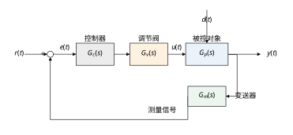
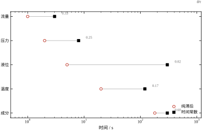
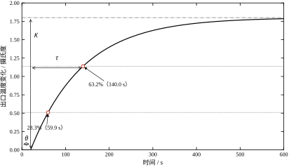
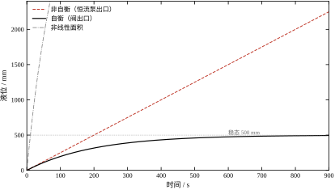
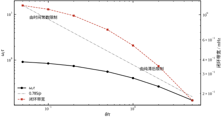
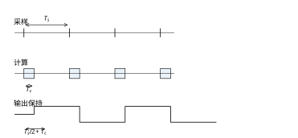
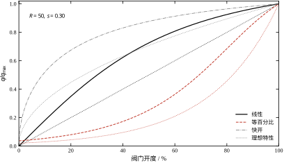
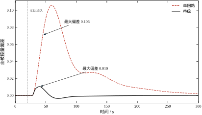
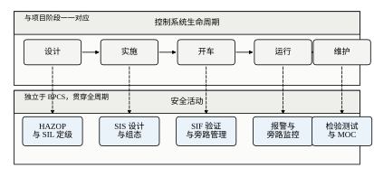

第一个片段来自一座炼油厂的常压塔。塔顶温度要求控制在 145\pm1 摄氏度，实际却在 143 到 148 之间来回走，产品干点随之超标。控制器的参数是十年前开车时抄来的，比例带 20%、积分时间 300 s，看上去“很保守”。真正的病因有两个：一是热电偶装在保护套管里，套管壁厚 3 mm，光是把热量传到元件上就要一分多钟；二是塔顶回流温度对塔顶温度的影响要经过整段填料层才显现，纯滞后接近 90 s。保护套管把时间常数从 30 s 拖到 130 s，操作工看曲线“反应太慢”，就不断加大比例增益去追，结果每次都在滞后段上过量，越追越振。过程控制里第一个要量的不是增益，是时间常数和纯滞后。
第二个片段来自一座污水处理厂的集水井。液位回路长期小幅振荡，周期约 8 min，操作工干脆打到手动，理由是“自动不如手动稳”。手动当然稳：人眼看到液位偏高就开一点泵，看到的永远是已经发生过的液位，人脑天然带一个很大的死区。而控制器的积分时间按流量回路的经验取了 5 s，对液位这种积分对象来说，相当于每秒都在把偏差往执行器上累，泵的启停频率被推到十几秒一次。同一个积分时间，在自衡对象上叫“快”，在积分对象上叫“自激”。
第三个片段来自一套聚烯烃装置。反应器高压联锁在开车阶段被反复旁路，因为每次升温升压都会误跳车。旁路一次、两次，最后成了一种习惯，SIS 投用率常年不到 80%。这不是仪表问题，是设计与工艺没对齐：联锁定值按正常工况取，没给开车段留出合理的旁路窗口和复位条件。功能安全标准之所以把“旁路管理”写成一等公民，就是因为现场最常见的失效不是元件坏掉，而是人把保护关掉了。
三个片段的共同点：算法本身都没错，模型也没错，错在对“过程”的量级判断。炼油塔的时间尺度是百秒级，污水井的对象类型是积分型，聚烯烃装置的安全功能要用概率去衡量。本章要建立的，就是这三件事的判断力。
与运动控制相比，过程工业有四个绕不开的约束，它们直接决定了方法论。
第一，慢。运动控制的电流环在微秒级、位置环在毫秒级；过程控制的温度回路时间常数在百秒级，成分回路在几分钟到几十分钟。慢带来的直接后果是实验成本高：想做一次阶跃测试，得等三到五个时间常数才算稳，温度回路就是十分钟；成分回路可能是两个小时。所以过程控制里“先辨识再整定”是常态，靠试凑把参数调出来在现场几乎不可行。
第二，不敢试。连续生产装置停车一次，损失以小时计；化工装置还有物料平衡和安全风险。这意味着不能做大幅度的开环实验，辨识必须在闭环、小幅、带约束的条件下完成。这也是阶跃响应法、继电反馈法在过程工业里比在运动控制里更受重视的原因。
第三，纯滞后显著。运动轴的滞后主要是采样与计算延迟，通常在毫秒量级，相对时间常数很小；过程对象的纯滞后来自物料输送、热量传导、分析仪表取样管线，动辄十几秒到几分钟。表 104-1 给出五类典型回路的量级，纯滞后与时间常数之比从液位的 0.02 一直跨到成分的 0.60。这个比值不是“一个参数”，它是一条硬边界：比值越大，能取到的闭环带宽越低，任何整定方法都绕不过去（§104.6 会把它画成一条曲线）。
表 104-1 五类过程量的典型时间尺度
| 被控量 | 时间常数 \tau / s | 纯滞后 \theta / s | \theta/\tau | 典型仪表 |
|---|---|---|---|---|
| 流量 | 3 | 1 | 0.33 | 孔板 + 差压变送器 |
| 压力 | 8 | 2 | 0.25 | 压力变送器 |
| 液位 | 300 | 5 | 0.02 | 差压/雷达液位计 |
| 温度 | 120 | 20 | 0.17 | 热电偶 + 保护套管 |
| 成分 | 300 | 180 | 0.60 | 在线色谱 |
第四，安全要独立成层。运动控制的安全大多靠驱动器内部的 STO、SLS 实现，与控制器同源；过程工业的基本过程控制系统（BPCS）与安全仪表系统（SIS）必须物理独立，用不同的传感器、不同的逻辑 solver、不同的执行元件，因为要防的是共因失效。§104.10 会把这条讲透。
不管被控量是温度、压力还是液位，单回路的结构是同一张图（图 104-1）：设定值 r(t) 与测量值比较得到偏差 e(t)，控制器 G_c 算出操纵量，调节阀 G_v 把它变成实际流量，对象 G_p 输出被控量 y(t)，变送器 G_m 再把 y 变回信号送回去比较。扰动 d(t) 从对象入口进入，这是过程控制与运动控制最本质的差别之一：运动控制的主要“扰动”是自身的惯量与摩擦，过程控制的主要扰动来自上下游工艺，且不可测。

把四个环节乘起来，闭环传递函数是标准形式
y(s)=\frac{G_c G_v G_p}{1+G_c G_v G_p G_m}\,r(s)+\frac{G_p}{1+G_c G_v G_p G_m}\,d(s) \tag{104-1}
式 (104-1) 的第二项说明了过程控制的核心矛盾：扰动通道的分子只有 G_p，分母却有全部四个环节。要压低扰动的影响，只能把回路增益做大；但回路增益做大受纯滞后限制。这个矛盾在 §104.6 会量化成一条“带宽上限”曲线。
工程上还习惯把四个环节的静态增益单独拎出来，定义回路总增益
K_{\text{loop}}=K_c\,K_v\,K_p\,K_m \tag{104-2}
它的量纲是无量纲（因为 K_c 的单位是“输出百分比/输入百分比”）。K_{\text{loop}} 太大则振荡，太小则余差大——注意这里说的是静态总增益，与决定稳定性的动态增益不是一回事，但在纯滞后很小的回路上两者常常同向变化，所以现场仍用它做粗判。
把第 103 章的结论拿来做对照：一台加工中心的位置环带宽约 32 Hz，本章主线算例（温度回路，K=1.8、\tau=120 s、\theta=20 s）在 45 度相位裕度下能取到的闭环带宽只有 1.12 mHz；即便改用更激进的 SIMC 整定（§104.4），也只到 4 mHz。两者相差八千倍以上，接近四个数量级。
这个差距不是“调得保守”，而是物理决定的。运动控制的对象是刚体，力矩直接产生加速度，输入输出之间只有毫秒级延迟；过程对象是分布参数的传热传质过程，能量要先“渗”过管壁、填料、物料，才能反映到测量点上。图 104-2 把五类过程量的时间常数与纯滞后画在同一张对数轴上，可以看到两个事实：

横轴上每个点的位置决定了三件事：采样周期怎么选（§104.5）、控制器能取多快（§104.6）、以及现场该用什么仪表去压缩滞后（§104.9）。读图的方法是先看 \theta/\tau，再看绝对值：比值决定难度，绝对值决定你多久能等到一次实验结果。
本章按“模型—整定—落地”三段走。§104.2 到 §104.4 建立一阶加纯滞后（FOPDT）模型，讲清 K、\tau、\theta 三个参数的物理来源和两点法辨识；§104.5 到 §104.7 处理离散化、稳定性边界与参数意义，核心结论是“纯滞后吃掉带宽”；§104.8 到 §104.10 讲整定经验、常见优化手段（串级、前馈、阀门特性修正、温压补偿）以及生命周期与功能安全；§104.11 与 §104.12 给出适用边界和可复现代码。
需要提前说明边界：PID 的具体算法在第 44 章与第 106 章展开，MPC 在第 58 章与第 80 章，Smith 预估在第 47 章与第 107 章。本章只讲过程对象本身的特性，以及这些特性如何反过来约束控制器，不重复上述章节的推导。
读本章时建议随身带三个问题：这条结论是在哪个对象上算出来的（K、\tau、\theta 各是多少）？换一个回路还成不成立（是传函结构决定的，还是只对 \rho=0.167 这一个工作点成立）？现场怎么量（用哪几个可测的量能把它判出来）？本章从表 104-1 起就按“数字—条件—判据”三件事来写，缺了后两件，数字只是摆设。
过程控制的公式不难，难在单位。同一个 K_c，在教科书、DCS 画面和厂家手册里可能是三个不同的数，先把约定统一，后面才不会反复换算。
三类增益。工程增益用物理单位，如 1.8\ ^\circ\mathrm{C}/\%；归一化增益用“量程百分比/输出百分比”，无量纲；比例带则是归一化增益的倒数乘 100，即 PB=100/K_c^{\text{DCS}}。现场说“比例带 20%”，等价于 K_c^{\text{DCS}}=5。本章正文用工程增益，凡涉及 DCS 参数都会注明上标。
时间单位。\tau 与 \theta 一律用秒；T_i 与 T_d 在公式里用秒，但现场习惯用分钟，表 104-13 特意标了单位。唯一安全的做法是每次下装前把单位写在纸上，而不是凭记忆。
正反作用。阀门有气开（故障关）与气闭（故障开）两种，对象增益也有正有负（开大蒸汽阀，温度升高为正）。控制器必须选对正反作用，使回路总增益为正，即 \operatorname{sign}(K_c)\cdot\operatorname{sign}(K_v)\cdot\operatorname{sign}(K_p)=+1。
符号选错的表现很有辨识度：一投自动，阀门就朝偏差更大的方向走，几分钟内撞到限位。这类故障不是“参数不好”，而是“方向反了”，再调参数也没用。投运前用手动给一个小阶跃、看被控量是否朝预期方向变化，就能在一分钟内排除。
上下限与量程。本章所有百分比都指量程百分比，0% 对应量程下限、100% 对应上限。液位的“0%”通常不是罐底，而是仪表安装的零点，这一点在算 K=1/k_v 时必须核对，否则 \tau 会算错一个系数。
过程对象的严格模型是偏微分方程：塔板上的热量沿高度分布、管道里的浓度沿轴向扩散、反应器里的温度随位置与时间同时变化。理论上要无穷阶才能描述。工程上之所以敢用三个参数的模型，理由有三条。
第一条，控制关心的频段很窄。回路带宽在毫赫兹到零点几赫兹之间，比对象的高阶模态低得多。在这个频段上，高阶模态的贡献已经衰减成“一个等效惯性”，阶次再高也看不出来。这和第 47 章“模型降阶”的结论一致：低频段看增益与主极点，高频段看延迟。
第二条，三个参数都能从现场数据里估出来。阶跃响应上取两个点就能定 K、\tau、\theta（§104.2.3），不需要解优化问题。这一点在不能停车的场合是决定性的。
第三条，不确定度主要不在模型阶次上。现场的对象参数会随负荷、结垢、催化剂活性漂移，K 变 20%、\tau 变 30% 是常事。与其把模型精度从 5% 提到 1%，不如留 30% 的稳定裕度。过程控制是鲁棒性问题，不是建模精度问题。
一阶加纯滞后（First Order Plus Dead Time，FOPDT）的传递函数写成
G_p(s)=\frac{K e^{-\theta s}}{\tau s+1} \tag{104-3}
三个参数各有明确的物理含义：K 是静态增益（输出稳态变化量除以输入稳态变化量，带量纲），\tau 是时间常数（秒），\theta 是纯滞后（秒）。式 (104-3) 的量纲一致性要求 K 吸收输入输出的单位换算，\tau 与 \theta 都用秒——这三个参数必须带单位记录，只写数字是没法复现的。
设 t=0 时输入从 0 阶跃到 \Delta u，则输出为
y(t)=K\,\Delta u\left[1-e^{-(t-\theta)/\tau}\right],\quad t\ge\theta \tag{104-4}
t<\theta 时 y=0。这条曲线的形状只由 \tau 决定，位置只由 \theta 决定，高度只由 K\Delta u 决定——三者解耦，这正是两点法能成立的原因。
几个特征时刻的数值（本章算例 K=1.8、\tau=120 s、\theta=20 s、\Delta u=1）列在表 104-2。注意 95% 与 98% 的时刻：379.5 s 与 489.4 s。现场“等它稳”往往要等八分钟，而控制器的调节动作在头两分钟就做完了。这个时间差是操作工误判“控制器没反应”的根源。
表 104-2 FOPDT 阶跃响应的特征时刻
| 输出占稳态的百分比 | 时刻 / s | 与 \tau,\theta 的关系 |
|---|---|---|
| 28.3% | 59.9 | \theta+0.333\tau |
| 50.0% | 103.2 | \theta+0.693\tau |
| 63.2% | 140.0 | \theta+\tau |
| 95.0% | 379.5 | \theta+3\tau |
| 98.0% | 489.4 | \theta+3.912\tau |

图 104-3 把 K、\tau、\theta 画成了三根几何线段：K 是稳态高度，\theta 是曲线起跳前的那段水平距离，\tau 是从起跳点走到 63.2% 所花的时间。辨识的全部工作就是在这张图上量出这三段，剩下的都是算术。
设 t_{28} 与 t_{63} 分别是输出到达稳态值 28.3% 与 63.2% 的时刻。由式 (104-4) 反解：
\frac{t_{28}-\theta}{\tau}=-\ln(1-0.283)=0.333,\qquad \frac{t_{63}-\theta}{\tau}=-\ln(1-0.632)=1.000 \tag{104-5}
两式相减消去 \theta，得到只用时间差表示的估计式
\tau=1.5\,(t_{63}-t_{28}),\qquad \theta=t_{63}-\tau \tag{104-6}
系数 1.5 就是 1/(1-0.333)。用本章算例验算：t_{28}=59.9 s、t_{63}=140.0 s，得 \tau=1.5\times80.1=120.15 s，\theta=140.0-120.15=19.85 s；数值实现返回 119.90 s 与 19.92 s，与真值 120 s、20 s 的误差都在 0.1% 以内。误差来源是采样步长与插值，不是方法本身。
选这两个点的理由有两个。一是 28.3% 与 63.2% 相距一个 \tau，时间差最大，测量误差被放大得最少；二是两点都在曲线的“膝部”，读数对噪声相对不敏感。如果改用 10% 与 90%，时间差虽然更大（2.20\tau），但 10% 那一点贴近起跳处，滞后时间估不准会直接污染 \tau。
三点提醒：
FOPDT 不是凭空假设的。以一台上罐为例，设截面积 A、进料流量 q_{\text{in}}、出料经阀排出 q_{\text{out}}，液位 h。物料平衡是
A\frac{\mathrm{d}h}{\mathrm{d}t}=q_{\text{in}}-q_{\text{out}} \tag{104-7}
若出口是恒定扬程的离心泵（排出流量与液位无关），q_{\text{out}} 是常数，则式 (104-7) 变成纯积分：进料多一点点，液位就一直涨，没有稳态。这就是非自衡对象。本章算例中，q_{\text{in}} 比 q_{\text{out}} 多 10%，900 s 后液位涨到 2248.8 mm，没有任何收敛迹象。
若出口是调节阀，流量随液位升高而增大，线性化后 q_{\text{out}}=k_v h，代入式 (104-7)：
\frac{A}{k_v}\frac{\mathrm{d}h}{\mathrm{d}t}+h=\frac{1}{k_v}q_{\text{in}} \tag{104-8}
与式 (104-3) 对照，立即读出
K=\frac{1}{k_v},\qquad \tau=\frac{A}{k_v} \tag{104-9}
本章算例取 k_v=0.01 m²/s、A=2 m²，得 K=100 m/(m³/s)、\tau=200 s。仿真中液位在 900 s 时到 494.5 mm，稳态 500 mm，与一阶模型吻合。这就是自衡对象。

式 (104-9) 还给出两条工程推论。其一，\tau 与 A 成正比：罐子越大越难控，这是几何决定的，换控制器没用。其二，K 与 \tau 都由 k_v 决定，所以阀门开度一变，两个参数同时变——这就是为什么液位回路在大偏差时表现和小偏差时完全不同。
更麻烦的是非线性。若罐是卧式或锥底，截面积随液位变化，A=A(h)：本章算例取 A=1+0.05h，h 从 0 涨到 5 m 时时间常数从 100 s 变成 125 s，900 s 后液位到 4997.0 mm（稳态 5000 mm）。同一个 PID 参数，在罐底和罐顶的响应速度差 25%，这就是图 104-4 中第三条曲线与第二条不重合的原因。
纯滞后 \theta 有两类来源，处理方式不同。
输运滞后：物料从 A 点走到 B 点需要时间。皮带秤到配料仓、管道里从加药点到取样点，都属这一类。\theta=L/v，L 是距离、v 是流速。这类滞后可以通过缩短距离、提高流速来减小，是唯一能“物理消灭”的一类。
容量滞后：热量或物质要逐级“灌满”一串小容量才显现。热电偶保护套管、多层塔板、串联搅拌罐都是这一类。严格说它不是纯滞后，而是多个一阶环节串联，但工程上习惯用“等效纯滞后 + 一阶”来近似，因为这样整定公式简单。这类滞后不能消灭，只能靠改善传热（薄壁套管、增大插入深度）压缩。
作频域分析时，e^{-\theta s} 无法写成有理式，常用一阶 Padé 近似
e^{-\theta s}\approx\frac{1-\theta s/2}{1+\theta s/2} \tag{104-10}
它在低频段相位准确，但幅值恒为 1（全通），且在右半平面引入一个零点 s=2/\theta。这个右半平面零点就是“纯滞后不可补偿”的数学根源：任何试图用极点去对消它的控制器，都会因为零点在右半平面而失去最小相位性质。第 107 章的 Smith 预估正是绕开这一点，而不是对消它。
把式 (104-3) 写成无量纲形式，令 s'=\tau s，则
G_p(s')=\frac{K e^{-\rho s'}}{s'+1},\qquad \rho=\frac{\theta}{\tau} \tag{104-11}
\rho 就是 §104.1 表 104-1 里那一列。它把“对象有多难控”压缩成一个数：\rho=0.02 的液位回路几乎可以为所欲为，\rho=0.60 的成分回路则必须大幅降带宽。§104.6 将证明，在给定相位裕度下，允许的穿越频率满足 \omega_c\tau 随 \rho 单调下降，且在 \rho\gg1 时趋近 0.785/\rho——滞后越大，带宽按反比缩小，这是本章最重要的一条定量结论。
两点法只用两个时刻，看起来脆弱。实际上三个参数对误差的敏感度差别极大，认清这一点比追求“更准的辨识算法”更有用。
先看截断误差。现场等不到完全稳态是常态，若只等到 95%（约 3\tau）就收工，用终值当 K 会低估 5%。此时两个阈值也跟着按比例降低，代入式 (104-4) 反解：t_{28}=\theta+0.313\tau、t_{63}=\theta+0.917\tau，时间差只剩 0.604\tau，于是 \tau_{\text{est}}=1.5\times0.604\tau=0.906\tau，而 \theta_{\text{est}}=\theta+0.917\tau-0.906\tau 仍约等于 \theta。
也就是提前收工让 \tau 低估约 9%，而 \theta 几乎不受影响。这条结论很实用：如果现场实在等不到稳态，\theta 仍然可用，\tau 必须打折修正。
再看读数误差。设 t_{63} 晚读了 2 s，则 \tau 增加 3 s（2.5%），而 \theta=t_{63}-\tau 减少 3 s——对 \theta=20 s 的回路就是 15% 的误差。同一个 2 s 的读数误差，在 \tau 上是小扰动，在 \theta 上是大扰动，因为 \theta 是两个大数相减的小差。
最后看噪声。在 63.2% 附近，曲线的斜率是 K/\tau，本章算例为 1.8/120=0.015 K/s。若叠加 1% 量程的噪声，t_{63} 的散布约 0.01/0.015\approx0.67 s，折到 \theta 上是 3.3%。要把 \theta 估到 1% 以内，噪声必须压到 0.3% 量程以下——这就是阶跃测试前要先滤波、取多点平均的原因。
三条合起来给出一条实践准则：\theta 是最难测准的参数，而它又是最贵的参数。因此现场对 \theta 的正确态度不是“测准”，而是“宁可估大一点”。\theta 估大，整定出的控制器偏保守，回路慢一点但稳；\theta 估小，控制器偏激进，遇上负荷变化就可能振荡。§104.8 的经验参数表里，凡标注“滞后不确定”的场合，都是按上限取的。
现场对象很少严格是一阶。串级换热器、两层搅拌罐都是两个惯性串联，即二阶加纯滞后。把它们压成 FOPDT 有一条常用规则（半规则）：把较小的那个时间常数一半并进 \tau、一半并进 \theta。
设 G=Ke^{-20s}/[(100s+1)(20s+1)]，则近似为 \tau=100+10=110 s、\theta=20+10=30 s。在 \omega=0.0062 rad/s 处核对相位：
两者只差 1 度，这就是一阶模型够用的定量依据。半规则的道理可以拆开看：小时间常数在穿越频率处贡献 7.1 度相位，把它一半并进 \tau（穿越点左移，多 2.5 度）一半并进 \theta（多 3.6 度），合计 6.1 度，与原来的 7.1 度只差 1 度。
规则成立的前提是 \tau_2/\tau_1<0.3。若两个极点相当（\tau_2\approx\tau_1），折进 \theta 的那一半会明显高估滞后、低估带宽，此时压成一阶就不再安全，必须用二阶模型（SOPDT），见第 105 章。
一个回路从图纸到投运，走的是七步：定被控量与操纵量、定仪表与阀门、定采样周期、选控制器结构、整定参数、测试验收、文档移交。前四步在控制室里完成，第五步在现场，第六步在开车阶段，第七步决定这个回路五年后还能不能维护。
与七步对应的是三份文档，缺一份就会在后面付出代价：
现场最常见的问题是“参数被改过但没人知道”。整定记录的价值不在于当时的正确，而在于下一次出问题时能知道基线在哪。
被控量与操纵量的配对不是随便选的，前提是数清自由度。一个装置的自由度等于可独立调节的操纵变量个数，被控量不能多于它，否则必然有回路抢同一个阀。
三条配对原则，按优先级排：
一个常犯的错误是把“能测的量”都设成被控量。每多一个回路，就多一份耦合、多一份维护、多一份误动作风险。能用一个回路解决的问题不要用两个。
仪表量程按“正常工况落在 50%–70%”选，不要按极限工况。量程选大了，分辨率浪费；选小了，开车时超量程。
阀门选型看两个数：可调比 R（最大与最小可控流量之比）与压降比 s（阀门全开时阀上压降占系统总压降的比例）。本章算例取 R=50、s=0.30，这是离心泵系统里很典型的一组。s 太小（阀门口径选得过大）会让安装特性严重畸变，等百分比阀在小开度时几乎不起作用——§104.9 会用具体数字说明这一点。
还有一条常被忽略：阀门口径过大是过程控制里最常见的硬件错误。设计院按最大流量选阀，实际运行在 20% 开度，此时阀门工作在小开度区——安装特性陡峭、回路增益偏高，可用行程被压缩，流量分辨率变差，而且压降比 s 被压低，特性畸变进一步加剧。宁可让阀门在正常工况下开 60%–70%，也不要让它常年趴在 15%。
数字控制引入的等效滞后由三部分组成：采样保持的半个周期、计算耗时、输出刷新。工程上用
\theta_{\text{eff}}=\theta+\frac{T_s}{2}+T_c \tag{104-12}
作为“实际要面对的纯滞后”。T_s 是采样周期，T_c 是计算与通信耗时。本章算例（\theta=20 s）的实测结果是：T_s=0.5 s 时 \theta_{\text{eff}}=20.2 s，T_s=2 s 时 21.0 s，T_s=10 s 时 25.0 s，T_s=60 s 时 50.0 s。
判据取“附加滞后不超过原滞后的 5%”：
\frac{T_s}{2}+T_c\le0.05\,\theta\ \Longrightarrow\ T_s\le0.1\,\theta \tag{104-13}
按这条规则，温度回路（\theta=20 s）取 2 s，成分回路（\theta=180 s）取 18 s，流量回路（\theta=1 s）取 0.1 s。第三条在 DCS 上做不到——多数 DCS 的最快扫描是 100–500 ms，且同一个控制模块的所有回路共用一个扫描周期。所以工程上的实际做法是按最快的那类回路统一设扫描周期，再对慢回路放宽。§104.5 会给出完整的离散化推导。
顺序是固定的：单回路 PI → 单回路 PID → 串级 → 前馈 → MPC。每加一层，都要能回答“上一层为什么不够”。
几条经验分界：
整定不是“看着不振荡就行”。验收至少要有五条量化指标，表 104-3 给出本章串级算例的基线值——主对象 \tau=60 s、\theta=8 s，副回路入口加 0.2 的阶跃扰动，仅用单回路控制器。
表 104-3 回路验收的五条指标
| 指标 | 定义 | 本章算例 | 判据 |
|---|---|---|---|
| 最大偏差 | 扰动后偏离设定值的峰值 | 0.106 | 小于工艺允许值 |
| 恢复时间 | 回到 \pm2\% 带内的时间 | 215.5 s | 小于工艺节拍 |
| 衰减比 | 相邻两个峰的比值 | 4:1 以上 | 不持续振荡 |
| 阀门行程 | 稳态时阀位变化量 | 与增益匹配 | 不贴 0% 或 100% |
| 抗扰余量 | 负荷变动 20% 后仍稳定 | 需实测 | 不进入极限环 |
最大偏差与恢复时间是一对矛盾：把增益加大，最大偏差变小但振荡加剧，恢复时间未必缩短。验收时要同时看两条曲线，不能只看一条。
投运顺序不能颠倒：
第 2 步是唯一有风险的步骤。现场的安全做法（测试窗口、旁路、联锁屏蔽的最小化）在第 105 章详细讲；本章只强调一条：没有书面批准的阶跃测试不许做。
移交文档里最该写清楚的，不是“参数是多少”，而是“为什么是这个值”：
三年后的维护工程师只能靠这份文档判断“能不能动”。缺了它，任何一次参数修改都是赌博。
把七步落在纸面上，才看得出哪一步最容易漏。以本章主线算例的换热器出口温度为例，逐条填写：
第一步，定被控量与操纵量。被控量是出口温度（位号 TIC-104），操纵量是蒸汽阀开度。自由度要先数：蒸汽总管压力由另一个压力回路（PIC-201）控制，若 TIC-104 也去动同一个蒸汽阀，两个回路必然抢阀。所以 TIC-104 只能动“本换热器的蒸汽调节阀”，PIC-201 动“总管网减压阀”，两者物理上分开，自由度才成立。
第二步，定仪表。温度量程 0–200 ℃，正常工况 120 ℃，落在 60%，符合 §104.3.3 的 50%–70% 区间。若按极限 250 ℃ 选量程，正常点就落到 48%，分辨率白白损失。传感器用 Pt100 加变送器，精度 0.2 级；不选热电偶，是因为 120 ℃ 附近热电偶的冷端补偿误差会吃掉 1 ℃ 以上的分辨率。
第三步，定阀门。等百分比特性、R=50、s=0.30，正常开度按 65% 核算。核算方法是：最大热负荷对应 90% 开度，最小热负荷对应 40%，正常负荷落在中间——这三个点都不能贴边。
第四步，定采样周期。\theta=20 s，按式 (104-13) 得 T_s\le2 s。但同一 DCS 控制模块里还有流量回路（\theta=1 s），扫描周期统一设为 1 s，对温度回路相当于只消耗了 0.5 s 的附加滞后，完全够用。这一步的实质是取全场最快回路的需求，而不是逐个回路分别设。
第五步，选结构。\rho=0.167，远小于 1，单回路 PI 就够。先不上微分：温度信号本身带燃烧波动的高频噪声，微分会把噪声放大成阀门的持续动作，反而磨损填料。若阶跃测试后发现跟踪设定值明显滞后，再考虑加微分并配 0.1 的一阶滤波。
第六步，定验收指标。最大偏差不超过 2 ℃、恢复时间不超过 300 s、衰减比大于 4:1、稳态阀位在 40%–80% 之间。四条都要在投运记录上签字，缺一条就不算验收通过。
第七步，测试与投运。手动给 5% 阀位阶跃，按 K=1.8 ℃/% 预期温度变化 9 ℃，到 63.2% 需要 140 s。这个预期值必须提前算出来并写在测试方案里：如果实测只变了 3 ℃，说明阀门实际行程被限位，或者蒸汽已接近饱和、换热面积不足——没有预期值，现场就无法判断“这个响应是否正常”。
走完这一遍会发现，七步里真正花时间的不是算参数，而是第一、三、七步的核对。参数算错可以重算，配对错了、阀门选大了、测试没预期，代价都是停车。
第七步的实测数据是整个回路的地基。四个错误里，前三个让参数“偏”，第四个让参数“错”。
其一，基线不在稳态。 两点法假定阶跃前被控量稳定，本章代码里 span 直接取终值。现场常在上一次操作没走完时就做测试，起点仍在爬升，t_{28} 会被“提前”到达，结果是 \tau 偏大、\theta 偏小。判据：测试前至少观察 3\tau 的时间，被控量波动小于阶跃幅度的 5% 才动手。已经测脏了的数据可以救：只取阶跃后到新稳态的一段，先减去初值再做两点法。
其二，阶跃太小，埋在噪声里。 阶跃幅度与测量噪声同量级时，t_{28} 与 t_{63} 的定位误差可以到几十秒，\tau 与 \theta 全无意义。经验幅度是让被控量变化量程的 5%–15%，且至少是噪声峰峰值的 5 倍。表 104-7 提醒的是同一件事：12 位、量程 100 时最低位只有 0.0244，若阶跃只让读数动几个最低位，辨识出来的其实是噪声的形状。
其三，阶跃太大，走出了线性区。 幅度到 20%–30% 时，阀门可能进入等百分比特性的高增益段，换热器也可能接近温差极限、增益塌下来。这时测出的 K 偏低、\tau 偏大，整定结果偏保守。判据：分两次、幅度减半重测，若 K 变化超过 20%，说明已经非线性，应取工作点附近的小幅响应——这正是 §104.9.6 增益调度存在的理由。
其四，用闭环数据做开环辨识。 回路在自动状态下做设定值阶跃，记录到的是闭环响应，不是对象的阶跃响应：控制器一直在反向动作，两点法算出的 \tau 与 \theta 属于闭环，直接拿去整定会得出错误结论。要对象参数就得切手动；确实不能切手动的回路（如带联锁的关键回路），只能用闭环辨识方法，见第 105 章。
前三条把参数测“偏”，靠保守整定还能兜住；第四条把参数测“错”，整套参数失去意义。所以切手动这一步的价值，比后面所有计算都高。测试方案里还应写明三件事：允许的偏差上限、异常时的回退动作、谁有权叫停。
连续情形指控制器在模拟仪表或 DCS 的连续算法块上实现，采样周期远小于对象时间常数。此时回路增益是 s 的函数：
L(s)=G_c(s)\,G_v(s)\,G_p(s)\,G_m(s) \tag{104-14}
为把注意力集中在对象上，本章把阀门与变送器都按理想环节处理（G_v=1、G_m=1），并把它们的偏差留到 §104.9 讨论。于是 L(s)=K_c G_p(s)，G_p 由式 (104-3) 给出。
这个简化有两处代价。其一，阀门不是 1，它的增益随开度变化，§104.9 会算出一个 4.7 到 12 倍的漂移；其二，变送器有滤波，一阶滤波时间常数 \tau_m 会额外贡献相位滞后，若 \tau_m 接近 \tau/10 就不能忽略。本章先把它们放一边，是为了让“纯滞后决定带宽”这条主线清楚；实际整定时必须把它们加回去。
把 s=j\omega 代入，式 (104-3) 的相位是 -\arctan(\omega\tau)-\omega\theta。若控制器在穿越频率附近主要表现为积分作用（相位 -90 度），则相位裕度为
\mathrm{PM}=180^\circ-90^\circ-\arctan(\omega_c\tau)-\frac{180^\circ}{\pi}\,\omega_c\theta \tag{104-15}
式 (104-15) 把相位裕度拆成了三笔支出：积分器先拿走 90 度，对象极点再拿走 \arctan(\omega_c\tau)，纯滞后拿走 \omega_c\theta（弧度换度）。整定的本质就是在 180 度的预算里分配这三笔支出，剩余的才是裕度。
取 \mathrm{PM}=45^\circ，得设计方程
\arctan(\omega_c\tau)+\frac{180^\circ}{\pi}\,\omega_c\theta=45^\circ \tag{104-16}
式 (104-16) 里只有两个未知量的乘积关系，解出 \omega_c 后即可由 |L(j\omega_c)|=1 反算增益：K_c K=\sqrt{1+(\omega_c\tau)^2}。
式 (104-16) 在两个极限下有不同的主导项。
当 \theta\to0，纯滞后项消失，\arctan(\omega_c\tau)=45^\circ，即 \omega_c\tau=1。这时带宽由时间常数决定，\omega_c=1/\tau——这是任何一阶对象都逃不掉的“自然带宽”。
当 \theta\gg\tau，\arctan 项可以忽略，\omega_c\theta=45^\circ=0.785 rad，即
\omega_c\tau=\frac{0.785}{\theta/\tau}=\frac{0.785}{\rho} \tag{104-17}
带宽与纯滞后成反比。本章算例 \rho=0.167 落在中间区，数值解给出 \omega_c\tau=0.740；\rho=0.05 时 0.913（接近 1，由 \tau 主导），\rho=5 时 0.131（接近 0.785/5=0.157，由 \theta 主导）。
两个极限的交界在 \rho\approx1：此时 \arctan(\omega_c\tau) 与 \omega_c\theta 各贡献 22.5 度，\omega_c\tau=0.403。\rho<1 的回路，优化对象是 \tau（换薄壁套管、减小罐容）；\rho>1 的回路，优化对象是 \theta（缩短取样管线、加快分析周期）。这个分界是 §104.9 改进措施的排序依据。

图 104-5 把式 (104-16) 的解画成双对数曲线，虚线是式 (104-17) 的渐近线。注意右侧纵轴：\rho 从 0.05 增到 5，带宽从 1.21 mHz 掉到 0.174 mHz，相差 7 倍，而对象的时间常数一个都没变——变的只是滞后。
按 \mathrm{PM}=45^\circ 反算的 K_c 列在表 104-4。K_c K 从 \rho=0.05 时的 1.354 降到 \rho=5 时的 1.008，只降了 26%。也就是说，滞后从 0.05 增加到 5（一百倍），允许的比例增益几乎没变，但允许的带宽掉了七倍。
表 104-4 相位裕度 45 度下的可达穿越频率与增益
| \theta/\tau | \omega_c\tau | 闭环带宽 / mHz | K_c（K=1.8） |
|---|---|---|---|
| 0.05 | 0.913 | 1.210 | 0.752 |
| 0.10 | 0.844 | 1.119 | 0.727 |
| 0.20 | 0.740 | 0.982 | 0.691 |
| 0.50 | 0.556 | 0.737 | 0.636 |
| 1.00 | 0.403 | 0.534 | 0.599 |
| 2.00 | 0.264 | 0.350 | 0.575 |
| 5.00 | 0.131 | 0.174 | 0.560 |
这条结论的工程含义是：“加大增益”从来不是对付滞后的办法。增益的作用是压余差和抗扰，带宽的作用才是快速跟踪；滞后限制的是后者。现场常见的“增益已经加到极限还是不跟”就是这个原因——极限不是稳定性给的，是相位给的。
上表的数字基于“控制器在穿越频率处近似为积分器”的保守假设。若允许控制器在 \omega_c 处提供相位超前，就能取到更高带宽。SIMC 整定（Skogestad 的简单内模控制）正是这么做的：
K_c=\frac{\tau}{K(t_c+\theta)},\qquad T_i=\min\left(\tau,\ 4(t_c+\theta)\right) \tag{104-18}
t_c 是期望的闭环时间常数，通常取 t_c=\theta。代入本章算例：K_c=120/(1.8\times40)=1.667，T_i=\min(120,160)=120 s。
关键在于 T_i=\tau 使控制器的零点 (1+1/(T_i s)) 的极点与对象的极点 1/(\tau s+1) 精确对消。把数值代进去，回路增益化简为
L(s)=K_c K\,\frac{T_i s+1}{T_i s}\cdot\frac{e^{-\theta s}}{\tau s+1}=\frac{3\,e^{-20s}}{120\,s}=\frac{e^{-20s}}{40\,s} \tag{104-19}
这是一个纯积分加纯滞后的回路。穿越频率由 1/(40\omega_c)=1 得 \omega_c=0.025 rad/s，即 4.0 mHz；相位为 -90^\circ-0.025\times20\times57.3^\circ=-118.7^\circ，相位裕度 61.3 度。
增益裕度则不是无穷大。相位穿过 -180^\circ 的条件是 90^\circ+20\omega\times57.3^\circ=180^\circ，解得 \omega_{pc}=0.0785 rad/s，此时 |L|=1/(40\times0.0785)=0.318，故
\mathrm{GM}=\frac{1}{|L(j\omega_{pc})|}=3.14\ \ (9.9\ \text{dB}) \tag{104-20}
纯滞后回路的相位随频率线性下降，迟早会穿过 -180^\circ，所以增益裕度永远是有限值。这与第 103 章的二阶系统不同：二阶系统的相位最多降到 -180^\circ，裕度可能无穷大；一阶加纯滞后的相位没有下界。
对比 §104.4.4 的表：带宽从 1.12 mHz 提到 4.0 mHz，相位裕度反而从 45 度升到 61 度。代价是对消的准确性：式 (104-19) 成立的前提是 T_i 与 \tau 严格相等。把失配逐项算清，结论与直觉不太一样：
所以失配的主要后果不是稳定性崩塌，而是“带宽不兑现”：\tau 偏大时控制器看着不振荡，实际响应比设计慢两成，操作员只会觉得“这个回路怎么调都不快”。真正吃掉裕度的是 \theta 估小——这也是 §104.2.7 强调“\theta 宁可估大”的原因。
这就是两条路线的取舍：
工程上常见的做法是取两者之间：用 SIMC 算出上限，再按模型可信度打 0.6–0.8 的折扣。
上一节的表全部建立在“相位裕度 45 度”这个前提上。这个数不是定理，而是一个折中，值得算清代价。
仍取 \rho=0.2（\tau=120 s、\theta=24 s），把目标裕度从 60 度放宽到 30 度：
从 60 度降到 30 度，带宽涨到 2.37 倍，而增益只涨 34%。又一次印证 §104.4.4：能换速度的是相位预算，不是增益。
那为什么不干脆取 30 度？按二阶近似，45 度对应阻尼比约 0.45、过冲约 20%，30 度对应阻尼比 0.3、过冲已接近 37%。更要紧的是裕度要拿来吸收“没进模型的东西”：本章算例中 \tau 或 \theta 单独漂 30%–50% 各吃掉 4–5 度，K 漂 30% 吃掉 7 度，而阀门执行器行程时间、变送器滤波、取样管路的分布滞后这些被 FOPDT 忽略的环节，合起来还能再吃掉 10–15 度。留 45 度，扣掉这些还剩 30 度上下；只留 30 度，扣完就贴着临界，现场一次负荷切换就可能振起来。
反过来，取 60 度意味着主动放弃一半带宽。对温度这类 \rho 小的回路，放弃的带宽换来的是“常年不用管”；对 \rho>1 的成分回路，带宽本来就只剩零点几毫赫兹，再打六折就失去了控制意义。
所以 45 度是一个两头都能接受的中间值：过冲约 20%、对 30% 的参数漂移仍有承受力、带宽不至于腰斩。工程表格里 45 度出现的频率远高于其他值，原因就在这里。若工艺对过冲敏感（如某些聚合反应），取 60 度；若只求抗扰、允许过冲（如中间罐液位），取 30 度也无妨。
FOPDT 不是万能的，三种情况下式 (104-3) 会明显失真：
其一，\rho>1 且有明显的高阶动态。 此时纯滞后主导，但若对象同时有两个相近的极点（如串级换热器），用单个 \tau 拟合会把其中一个极点“塞进” \theta，导致相位在高频段被低估，实际稳定性比计算差。应改用二阶加纯滞后（SOPDT），见第 105 章。
其二，对象有反向响应。 某些锅炉汽包水位、精馏塔塔顶温度在初始阶段会朝相反方向走（右半平面零点）。此时任何“增益越大越快”的直觉都失效，K 的正负号在启动段甚至会变。
其三，对象本身在漂。 催化剂失活、换热器结垢会让 \tau 从 100 s 涨到 200 s。连续模型仍成立，但参数要定期更新，否则整定值会慢慢偏离。
判断方法很简单：看拟合残差。 把实测阶跃与式 (104-4) 画在同一张图上，若残差超过稳态变化的 5%，就该换模型了。
§104.2 说“\theta 是唯一的硬约束”，§104.4.3 给了 \omega_c\approx0.785/(\rho\tau)。两句话合起来意味着带宽严格按 1/\theta 走。把它算成一张表：\tau 固定 120 s，\theta 从 5 s 加到 80 s，每档都按 SIMC（t_c=\theta）重新整定，见表 104-5。
表 104-5 纯滞后对闭环指标的全面影响（\tau=120 s、K=1.8，每档重整定）
| \theta / s | \rho | K_c | T_i / s | 带宽 / mHz | PM / 度 | 超调 / % | 上升 / s | 调节 / s | IAE |
|---|---|---|---|---|---|---|---|---|---|
| 5 | 0.042 | 6.67 | 40 | 16.328 | 51.6 | 20.8 | 8.5 | 90.5 | 17.1 |
| 10 | 0.083 | 3.33 | 80 | 8.087 | 56.4 | 11.8 | 17.5 | 142.0 | 27.8 |
| 20 | 0.167 | 1.67 | 120 | 3.979 | 61.4 | 4.4 | 38.0 | 123.0 | 43.9 |
| 40 | 0.333 | 0.83 | 120 | 1.990 | 61.4 | 4.3 | 76.0 | 246.0 | 87.3 |
| 80 | 0.667 | 0.42 | 120 | 0.995 | 61.4 | 4.2 | 152.5 | 490.0 | 174.3 |
第一读：带宽严格按 1/\theta 走，误差不到 1%。 16.328 / 8.087 / 3.979 / 1.990 / 0.995 mHz，\theta 每翻一倍带宽正好减半。这是本章唯一一条精确的标度律，也解释了为什么“给分析仪加一段取样管线”这种看似无害的改动会让回路突然变懒——管线的停留时间就是 \theta，\theta 加倍，带宽减半。
第二读：\theta 的代价是速度，不是稳定性。 PM 全程稳定在 51.6–61.4 度，几乎没有变化，因为 SIMC 的 t_c=\theta 让裕度随 \theta 一起走。真正塌下去的是调节时间：90.5 → 490 s（5.4 倍），上升时间 8.5 → 152.5 s（18 倍）。“滞后大所以容易振荡”是一种错觉——振荡来自增益，不来自滞后。滞后大只是让回路变慢，慢到操作员以为它在振荡（几十分钟一个周期的“摆动”多半是积分在追一个永追不上的目标）。
第三读：超调反而随 \theta 增大而降。 20.8% → 4.2%。\theta 大时 SIMC 给出的 K_c 只有 \theta=5 s 时的十六分之一，设定值跟踪自然平滑。这提醒一件事：§104.6.8 那套“衰减比 4:1 折 45 度”的换算，只在同一个 \theta 下比较不同增益时才成立，拿两个不同 \theta 的回路比衰减比，比的是对象，不是整定。
第四读：IAE 与 \theta 近似成正比。 \theta 增 16 倍，IAE 从 17.1 增到 174.3（10.2 倍），拟合得 \mathrm{IAE}\approx2.1\theta+7。工程含义很直接：\theta 每增加 10 s，同样的负荷波动要多付约 21 s·℃ 的偏差积分。这就是“缩短取样管线、换快速分析仪”的报价依据——省下的 \theta 直接换成 IAE，再按产品不合格的时间折算成钱。
第五读：t_c=\theta 这条默认规则在 \theta 很小时偏激进。 \theta=5 s 那一档的 PM 只有 51.6 度，而不是其余几档的 61.4 度——因为 t_c=5 s 相对 \tau=120 s 只有 1/24，闭环被推到接近极限。SIMC 的原始建议是 t_c\ge\theta，但当 \theta\ll\tau 时应改用 t_c=\tau/10 一类的下界，否则增益会被放大到接近 ZN 的水平（本章 \theta=5 s 时 K_c=6.67，是 ZN 开环值 3.0 的两倍多）。
连续域的分析假设控制器瞬时响应。真实的 DCS 或 PLC 回路里，从“测量值被读到”到“阀门收到新指令”要经过三段：采样等待（平均 T_s/2）、计算与通信（T_c）、零阶保持（输出在下一个周期前不变，再贡献 T_s/2）。合起来就是式 (104-12) 里的 \theta_{\text{eff}}。

图 104-6 把三段时间画在同一时间轴上：第一行是采样时刻，第二行是计算占用，第三行是零阶保持的输出。可以看到输出永远比测量滞后一个采样周期左右，且是阶梯状的。阶梯本身不是问题，问题是它在频域里表现为相位滞后。
零阶保持的传递函数是
G_{\text{ZOH}}(s)=\frac{1-e^{-T_s s}}{s} \tag{104-21}
在低频段（\omega T_s\ll1）展开，其相位近似为 -\omega T_s/2，即
\angle G_{\text{ZOH}}(j\omega)\approx-\frac{\omega T_s}{2} \tag{104-22}
它等价于一段 T_s/2 的纯滞后。加上采样等待的 T_s/2（严格推导里两者是同一件事的两面，工程上合并计一次）与计算时间 T_c，总附加滞后就是式 (104-12)。
注意采样定理在这里没有用。Nyquist 只要求 T_s<1/(2f_{\max})，对本章算例（f_{\max} 取带宽 4.0 mHz 的 5 倍，即 20 mHz）意味着 T_s<25 s——这个条件宽松到毫无意义。真正约束采样周期的是相位裕度，不是混叠。
把附加滞后换算成相位损失，一阶估计是 \Delta\mathrm{PM}=\omega_c\Delta\theta；但穿越点会随滞后同步左移，真实损失要用采样回路的完整模型算：控制器离散成 C(z)，对象乘零阶保持，再逐点搜索 |L(j\omega)|=1。本章算例取 §104.4.5 的 SIMC 整定（K_c=1.667、T_i=120 s、\omega_c=0.025 rad/s，即 4.0 mHz），结果列在表 104-6。
表 104-6 采样周期与等效滞后、相位损失
| T_s / s | \theta_{\text{eff}} / s | 附加滞后 / s | \omega_c / mHz | PM / 度 | 损失 / 度 |
|---|---|---|---|---|---|
| 0.5 | 20.25 | 0.25 | 3.98 | 61.0 | 0.3 |
| 2 | 21.0 | 1.0 | 3.98 | 59.9 | 1.4 |
| 10 | 25.0 | 5.0 | 3.97 | 54.4 | 7.0 |
| 30 | 35.0 | 15.0 | 3.87 | 42.0 | 19.4 |
| 60 | 50.0 | 30.0 | 3.62 | 27.9 | 33.4 |
读法：T_s\approx\theta/2 时损失 7 度，T_s=1.5\theta 吃掉 19 度，T_s=3\theta 只剩 28 度——按 §104.6.8 的换算，28 度对应四成上下的过冲，回路已经“看着能控、动起来就振”。表里后两行的损失都小于一阶估计 \omega_c\Delta\theta（T_s=60 s 时估 43 度、实算 33 度），因为穿越点随滞后一起左移；拿一阶估计做校核偏保守，是安全的。这正好解释了为什么很多“控制器参数没问题但就是振”的回路，最后发现是扫描周期被设成了 30 s 或 60 s。
按优先级排：
第 3 条的反面是：不要把快慢悬殊的回路放在同一个控制模块里。温度回路（2 s 够用）和流量回路（0.5 s 才够）混在一起，要么浪费算力，要么牺牲流量回路。
把连续 PI 变成离散形式，常用的有三种：前向差分、后向差分、双线性（Tustin）。它们的频率特性不同，双线性会引入频率畸变，需要预畸变补偿——这部分推导在第 103 章 §103.5.9 已经做过，结论可直接沿用：在 \omega_c 处做预畸变，\omega_a=2/T_s\tan(\omega_cT_s/2)。
对过程控制来说，还有一个更实际的陷阱：积分项的实现方式。位置式积分在输出限幅时如果不做抗饱和，积分器会一直累到饱和值，阀门开到头也不回退，等偏差反向后要很久才退出来。这在中速回路（温度、成分）上表现为“超调后长时间不回落”。
抗饱和的具体做法（积分限幅、反算法、条件积分）在第 106 章展开，本章只提醒：限幅必须成对配置。只限输出不限积分，等于没限。
模拟量输入经过 A/D 变成数字，分辨率由位数决定：
\Delta=\frac{\text{量程}}{2^{n}} \tag{104-23}
表 104-7 给出量程 0–100 时的最低有效位。12 位是过程工业最常见的配置（\Delta=0.0244），16 位用于需要高分辨率的场合（如精密称重、色谱）。
表 104-7 A/D 位数与最低有效位（量程 0–100）
| 位数 | LSB | 相对量程 |
|---|---|---|
| 10 | 0.0977 | 9.8\times10^{-4} |
| 12 | 0.0244 | 2.4\times10^{-4} |
| 14 | 0.0061 | 6.1\times10^{-5} |
| 16 | 0.0015 | 1.5\times10^{-5} |
过程控制的矛盾在于：分辨率提高，噪声也被放大。12 位以上的 A/D 若不加滤波，末位会持续跳动，控制器会把这个跳动当作真实偏差去调节，阀门就会“嗡嗡”地小幅动作。这就是为什么 DCS 的模拟量输入默认带一阶滤波（通常 0.2–2 s），而滤波又贡献相位滞后——分辨率和带宽是一对必须同时权衡的量。
判断量化是否够用的简单方法：把 LSB 换算成被控量的工程单位，若它小于工艺允许偏差的 1/5，就够用；否则要么提高位数，要么换量程。
最后一件常被忽略的事：采样时刻的抖动。DCS 的扫描是周期性的，但通信、操作系统调度会让实际采样时刻有几十毫秒的抖动。对温度回路（\tau=120 s）这无所谓；对流量回路（\tau=3 s）就会引入等效噪声。
工程上的处理是给每个采样值打时间戳，控制器按时间戳算积分，而不是按“第几个扫描周期”。这样即使某次扫描迟到，积分量也不会算错。这条在无线仪表和远程 I/O 场合是必须的，在有线 DCS 上则属于好习惯。
温度回路 \tau 大，采样粗放一点看不出来。换到流量回路（\tau=3 s、\theta=1 s、K=1），同样的采样周期就是另一回事了：\theta 只有 1 s，T_s/2 很快就与它同量级。按 §104.4.5 的 SIMC 规则（t_c=\theta_{\text{eff}}、T_i=\min(\tau,4(t_c+\theta_{\text{eff}}))=3 s）两种做法各算一遍。
做法一：参数按名义模型整定好（K_c=1.500），之后只改扫描周期：
做法二：每换一个扫描周期就按折算模型重整定，\theta_{\text{eff}}=\theta+T_s/2、K_c=\tau/[K(t_c+\theta_{\text{eff}})]：
三件事值得注意。
第一，保裕度就得让带宽。 做法二把 PM 稳在 61–64 度，代价是 T_s 从 0.1 s 拉到 5 s 时增益掉 70%、带宽从 75.8 mHz 掉到 21.6 mHz——采样滞后买不回来，只能拿性能换。做法一的带宽看着守住了（79.6 掉到 59.9，只掉 25%），但那是靠消耗裕度换的：PM 从 60 度一路掉到 24.8 度，回路已在振荡边缘。
第二，损失相对温度回路陡得多。 同为 T_s=2 s，温度回路只损失 1.4 度，流量回路损失 21.7 度。原因是 \theta 相差 20 倍：附加滞后对温度是 \theta 的 5%，对流量是 100%。这说明“扫描周期按最慢回路定”是不够的，必须按每条回路自己的 \theta 定——这正是 §104.5.4 第一条规则的由来。
第三，流量回路的实际可用带宽还要打折。 流量信号噪声大（节流装置差压波动、泵的脉动），实际整定时 K_c 常要再乘 0.5–0.7。采样损失与噪声折扣叠加，才是现场流量回路“参数看着很激进、响应很肉”的原因。
由此得到一条组态建议：按时间尺度把回路分组，快慢相差十倍以上的不要放在同一个控制模块。温度（\tau=120 s）与流量（\tau=3 s）相差 40 倍，强行共用一个 0.5 s 扫描周期，等于让温度回路陪着流量空转；反过来让流量跟着温度的周期走（温度回路 10 s 也够用），流量回路的 \theta_{\text{eff}} 从 1.05 s 变成 11 s，十倍于原滞后，这条回路就调不起来了。
§104.5.5 只说了三种方法的原理，没给量。用同一套办法（离散控制器乘零阶保持对象、搜索 |L|=1）在主回路上量一遍，K_c=1.667、T_i=120 s 不变，只换离散化方法：
三条读法。
前向差分偏“迟”。 它的积分增益在高频段偏小，等效多了一段滞后，所以穿越点最低、带宽最小（T_s=60 s 时 2.94 mHz）。反过来，把前向差分的回路调到“刚好 45 度”，实际裕度会比设计值高一点，属于“稳但慢”。
后向差分偏“快”，但高带宽是假的。 积分增益偏大，穿越点最高（4.32 mHz），代价是相位掉得最狠（18.6 度）。那个带宽是在裕度几乎耗尽的条件下取得的，阶跃响应会明显振荡。现场“参数一个字没改、只换了积分算法就开始振”，根源就在这里。
双线性居中，且在中粗采样下与连续设计几乎重合。 T_s=30 s 时它是 42.0 度，正好落在前向的 44.4 与后向的 38.5 之间。§104.5.5 提到的预畸变在这里看不出差别：\omega_cT_s/2=0.025\times60/2=0.75 rad，\tan 修正只有几个百分点，被其他误差淹没。预畸变只在 \omega_cT_s 接近 1 时才值得做，过程回路很少到这个程度。
三种方法的差距（T_s=60 s 时带宽 2.94 对 4.32、PM 33 对 19）与换一种整定方法相当（表 104-12 里 ZN 与 SIMC 的 PM 差 15 度、增益差 1.8 倍）。但两者的决定权不同：离散化方法通常由 DCS 厂商固定、现场改不了，扫描周期却在组态时随手可改。能改的那个先改对。
频率域判稳的两个量是相位裕度与增益裕度：
\mathrm{PM}=180^\circ+\angle L(j\omega_c),\qquad \mathrm{GM}=\frac{1}{|L(j\omega_{pc})|} \tag{104-24}
其中 \omega_c 是 |L|=1 的穿越频率，\omega_{pc} 是 \angle L=-180^\circ 的相位穿越频率。
对一阶加纯滞后回路，这两个裕度的性质很不一样。相位 \angle L=-90^\circ-\arctan(\omega\tau)-\omega\theta 随 \omega 单调下降且没有下界，所以 \omega_{pc} 必然存在，GM 必然有限。而 GM 的大小几乎完全由 \theta 决定：\theta 增大，相位下降加快，\omega_{pc} 提前，|L(j\omega_{pc})| 随之增大，GM 变小。
结论是：纯滞后回路的相位裕度是主要指标，增益裕度是次要指标。原因在于参数漂移的方向性——负荷变化主要改变 K 与 \tau，几乎不改变 \theta；而 \theta 不变时 GM 的变化幅度远小于 PM。现场只看 GM 会漏掉真正的风险。
把 §104.4 的两种整定放在一起比，差别一目了然（表 104-8）。保守表按 \rho=0.167 取 K_c=0.691；SIMC 按 t_c=\theta 取 K_c=1.667、T_i=120 s。
表 104-8 两种整定的裕度与带宽
| 设计 | K_c | T_i / s | 带宽 / mHz | PM / 度 | GM |
|---|---|---|---|---|---|
| 保守表（\mathrm{PM}=45^\circ） | 0.691 | — | 0.98 | 45.0 | 8.2 |
| SIMC（t_c=\theta） | 1.667 | 120 | 4.0 | 61.3 | 3.1 |
| SIMC，实际 \tau 为 156 s | 1.667 | 120 | 3.2 | 62.4 | 4.0 |
第三行是最值得注意的：时间常数漂移 30%，增益裕度从 3.1 升到 4.0，相位裕度微升到 62 度，看上去“更稳了”，实际带宽却从 4.0 mHz 跌到 3.2 mHz。原因是对消失配后残余的极点-零点对在高频段多提供了一点衰减，同时把穿越点整体压低——稳定性指标变好，性能指标变差。这正是 §104.6.1 那条结论的实证：PM 与 GM 都是“稳不稳”的指标，没有一个是“快不快”的指标。
工程判据因此写成两条并列：PM 不低于 45 度，GM 不低于 2（6 dB）。前者防振荡，后者防模型严重失配。两条都满足之后，还要单独核对带宽是否达到工艺要求——这是表 104-3 里“恢复时间”那一项存在的意义。
验收看时域，整定看频域，两者要有换算。常用的三个积分指标是
\mathrm{IAE}=\int_0^\infty |e(t)|\,\mathrm{d}t,\qquad \mathrm{ISE}=\int_0^\infty e^2(t)\,\mathrm{d}t,\qquad \mathrm{ITAE}=\int_0^\infty t\,|e(t)|\,\mathrm{d}t \tag{104-25}
三者的偏好不同：IAE 对小偏差一视同仁，最接近“总物料损失”；ISE 重罚大偏差，整定结果偏向快速压制峰值；ITAE 重罚拖尾，整定结果偏向快速收敛。
过程控制里最常用 IAE，因为它和“产品不合格的时间总量”直接对应。但IAE 不能单独用来比较不同结构：串级的 IAE 天然比单回路小，这是结构带来的，不是参数调得好。
除了积分指标，还要看三个瞬时量：最大偏差、峰值时间、恢复时间。表 104-3 给的就是这三个。它们与积分指标常常冲突——把增益调大，最大偏差下降但恢复时间可能变长（振荡拖尾），IAE 反而变大。
灵敏度函数与补灵敏度函数分别是
S(s)=\frac{1}{1+L(s)},\qquad T(s)=\frac{L(s)}{1+L(s)} \tag{104-26}
S 描述扰动与模型误差被放大的程度，T 描述设定值跟踪能力。两者满足 S+T=1，所以在任何频率上都不可能同时小。
在低频段（\omega\ll\omega_c），|L|\gg1，于是 |S|\approx1/|L|，|T|\approx1。若控制器按 T_i=\tau 做极点对消（§104.4.5 的 SIMC 即如此），回路在低频段近似为 L\approx K_cK e^{-\theta s}/(\tau s)，于是 |L|\approx K_cK/(\omega\tau)=\omega_c/\omega，代入得
|S(j\omega)|\approx\frac{\omega}{\omega_c} \tag{104-27}
式 (104-27) 与第 102 章、第 103 章用的是同一口径：抗扰能力随频率线性变差，频率翻倍，扰动抑制减半（6 dB）。对没有做极点对消的回路，低频段 |S| 会趋于一个常数 1/(K_cK) 而不是零，抗扰更差一档。
这条关系解释了一个常见困惑：为什么温度回路对“缓慢漂移”抑制得很好，对“每分钟一次的脉动”几乎无能为力。前者频率远低于 \omega_c=0.0062 rad/s（约 1 mHz），|S| 只有 0.01 量级；后者频率接近甚至超过 \omega_c，|S| 接近 1，控制器等于没起作用。
要提高抗扰，只能提高 \omega_c；要提高 \omega_c，只能减小 \theta 或放宽 PM。这是本章反复回到的那条链。
教科书里的超调量与阻尼比关系（如 \sigma\%=e^{-\pi\zeta/\sqrt{1-\zeta^2}}）只对二阶无零点是精确的。一阶加纯滞后回路套这个公式会得出错误结论：
判断振荡来源的实用方法：量振荡周期。若周期接近 4\theta 到 6\theta，是纯滞后引起的；若周期接近 2\pi/\omega_c，是增益过高引起的；若周期很长（几分钟），是积分时间太短引起的。
过程对象的三类漂移，对稳定性的影响排序是：
对应的防御手段也不同：\tau 漂移靠定期重新辨识；K 漂移靠阀门选型与特性修正（§104.9）；\theta 漂移只能靠工艺维护（清管、换取样探头）。
现场所谓的“不稳”，多数不是发散，而是极限环：小幅、等幅、持续的振荡。过程控制里有三类典型来源：
阀门黏滞。阀杆填料过紧或阀芯磨损，阀门在小信号下不动，偏差积累到一定程度突然跳一下。表现是等幅三角波，周期由积分时间决定。这时加增益只会让振幅变大，正确做法是加阀门定位器或改气开气闭方式。
量化与噪声。A/D 末位跳动被积分器累积，输出在两点之间来回。表现是高频小幅抖动，周期等于扫描周期。正确做法是加输入滤波或设置积分死区。
积分饱和后的退饱和。输出限幅后积分继续累积，偏差反向后要很久才退出饱和，表现为一次大超调后长时间不回落。正确做法是抗饱和（第 106 章）。
三类极限环的周期完全不同，从扫描周期到几十分钟。量周期是最快的分类方法，比看波形形状可靠。
现场没有扫频仪，PM 与 GM 都测不出来。但验收时人人都看得懂“衰减比”，于是需要一个换算桥。
对二阶近似，相邻两峰之比 r 与阻尼比的关系是 \zeta=\ln r/\sqrt{\pi^2+(\ln r)^2}，再按 \mathrm{PM}\approx100^\circ\zeta（小阻尼时的常用近似）折算：
这条换算解释了两件事。其一，为什么验收指标写 4:1 而不是 2:1：4:1 对应 45 度裕度，留了 20 多度的漂移余量；2:1 只剩几度。其二，为什么“再调快一点”往往一步就过头：从 4:1 到 2:1，周期只缩短约 30%，但裕度掉了一半，操作员感觉“反应快了不少”，仪表记录上是“离发散只差一次负荷波动”。
换算的前提是响应确实是二阶振荡。若波形是等幅三角波（阀门黏滞）或高频抖动（量化噪声），先按 §104.6.7 分类，不要套这个公式。先认波形，再算指标，顺序反了会把硬件问题当成整定问题。
§104.6.7 把“积分饱和后的退饱和”列为三类极限环之一，却没给量。设一个再普通不过的场景：稳态在 40% 阀位（72 ℃），工艺要求提高到 170 ℃，而 170 ℃ 需要 94.4% 阀位。上升初期偏差很大，K_c=1.667 的 PI 立刻把输出推到 100% 并顶住数百秒。两种做法对比：饱和期间积分照常累积（无条件积分），与输出被限幅时回退这一步积分（条件积分抗饱和）。结果见表 104-9。
表 104-9 积分饱和与抗饱和的对比（阶跃 72 → 170 ℃，阀位上限 100%）
| 积分处理 | 超调 / % | 上升 / s | 调节 / s | IAE | 峰值 / ℃ |
|---|---|---|---|---|---|
| 无条件积分 | 10.2 | 271.0 | 1133.5 | 17895 | 180.0 |
| 条件积分抗饱和 | 0.0 | 393.5 | 393.0 | 12356 | 170.0 |
第一读：抗饱和把这个回路从“不能用”变成“能用”。 超调 10.2% → 0，调节时间 1133.5 → 393.0 s（快 2.9 倍），IAE 降 31%。峰值 180.0 ℃ 正好是阀门 100% 时的稳态值——无条件积分把回路一路顶到阀门能给的上限，然后要反向累积几百秒才能退出来，这就是 §104.6.7 说的“一次大超调后长时间不回落”。对需要大幅提负荷的回路，抗饱和不是可选项，是能不能投自动的前提。
第二读：抗饱和让“上升时间”变长了 45%，这不是退步。 271.0 → 393.5 s。原因是有超调的那条曲线靠冲过头才早到 98% 线，上升时间被超调“买”走了。这正好印证 §104.6.3 那句“三个瞬时量常常冲突”：在饱和场景下，上升时间几乎是最不可靠的指标，必须与超调、调节时间一起看。单拿上升时间验收，会奖励“先冲过去再回来”的坏整定。
第三读：条件积分只是抗饱和家族里最简单的一种。 工业 DCS 上更常见的是积分限幅（把积分项钳在 \pm2u_{\max}/K_c）与外反馈法（用限幅后的输出反算积分）。三者的效果在同一量级，差别在实现复杂度与抗噪声表现。本章的 pi_closed_loop()、cpm_benchmark()、windup_demo() 用的都是条件积分，两行代码即可，现场若控制器只提供积分限幅，效果也够。
一条实用判据：一次正常的负荷调整若需要超过 80% 的阀位行程，抗饱和就必须配；若工艺常年稳态、从不做大阶跃，抗饱和的收益只在开停车时兑现——而开停车恰恰是最容易出事故的时段，这笔账不能只按稳态运行时间算。
K、\tau、\theta 三者的分工非常清楚：
三者的可观测性差别很大。K 最容易测（等稳态即可），\tau 次之（看曲线膝部），\theta 最难（起跳点附近噪声大、采样粗时甚至看不出）。这也解释了为什么现场辨识的误差主要来自 \theta。
K 有两种写法，混用是整定错误的常见来源：
本章算例统一用工程增益，此时 K_c 的单位是“操纵量百分比 / 被控量工程单位”，与 K 互为倒数关系。DCS 上显示的增益按归一化定义，所以下装参数前必须换算：
K_c^{\text{DCS}}=K_c^{\text{eng}}\times\frac{\text{被控量量程}}{100} \tag{104-28}
以本章算例验算：K_c^{\text{eng}}=1.667\ \%/^\circ\mathrm{C}，温度量程 0–200 摄氏度，则 K_c^{\text{DCS}}=1.667\times2=3.33 %/%；反过来用归一化增益 K=1.8\times100/200=0.9 代进式 (104-18)，得 120/(0.9\times40)=3.33，两者一致。
忘记换算的后果是增益差一个量程比。量程 200 摄氏度的回路会差 2 倍；若量程是 0–1000，差 10 倍，回路必然振荡，而现场往往归因于“对象太难控”。
\tau 大有两面性。好的一面：它天然滤波，测量噪声和高频扰动被衰减，控制器的输出可以比较“干净”。坏的一面：它贡献相位滞后，且是极点对消的对象；一旦 \tau 估错，对消失配，稳定性直接受损。
\tau 的物理来源决定了它能不能改，见表 104-10。
表 104-10 \tau 的主要来源与可改造性
| 对象类型 | \tau 的主要来源 | 能否减小 |
|---|---|---|
| 温度 | 套管热阻、物料热容 | 能（薄壁套管、增大流量） |
| 液位 | 罐容 / 出口阻力 | 能（减小罐容、开大出口） |
| 成分 | 混合腔容积、分析仪响应 | 部分能（减小死区、换快分析仪） |
| 压力 | 管容、气室容积 | 一般不能 |
注意“能减小”不等于“该减小”。罐容减小会牺牲缓冲能力，工艺上往往不允许。\tau 的优化要和工艺一起做，不是控制专业单方面能定的。
\theta 是最不该被低估的参数。它有三个特点：
第一，它是纯损失。\tau 大至少还带来滤波，\theta 大只带来相位滞后，没有任何好处。
第二，它对带宽的影响是反比的。式 (104-17) 已经给出：\rho\gg1 时 \omega_c\propto1/\theta。\theta 翻倍，带宽减半。这是所有参数里最“硬”的一条关系。
第三，它最难辨识也最难改。辨识上，起跳点被噪声掩盖；改造上，输运滞后要靠改管线，容量滞后要靠改设备，都是投资行为。
所以工程上有一条排序：先问 \theta 能不能减，再问 \tau 能不能减，最后才调参数。反过来做——先调参数、调不好再改工艺——是最常见的浪费。
K_c、T_i、T_d 的作用在第 44 章已详细展开，这里只列它们在过程回路里的“症状对应”（表 104-11）。
表 104-11 三个控制器参数的症状对应
| 参数 | 调大后的效果 | 过大的症状 | 过小的症状 |
|---|---|---|---|
| K_c | 抗扰变强、余差变小 | 振荡、周期约 4\theta–6\theta | 余差大、恢复慢 |
| T_i | 积分变弱、超调变小 | 余差长时间不消 | 超调大、振荡周期长 |
| T_d | 超前增强、响应变快 | 噪声放大、阀门抖动 | 几乎无影响（若 \theta 大） |
一个反直觉的事实：\theta 大的回路上，T_d 的作用很有限。微分的超前最多 90 度，而纯滞后在穿越频率处已经吃掉几十度；更糟的是微分会放大高频噪声，而过程测量（尤其流量）噪声大。这就是为什么流量回路几乎从不用 D。
按“参数漂移 20%–30% 时对稳定裕度与带宽的综合影响”排序，经验顺序是：
第 4 条值得单独强调。K_v 不在整定公式里显式出现（它被吸收进 K），所以调参时容易被忽略；但它随开度、压降、介质黏度变化，是过程回路里最大的“隐形扰动”。
最后一条观念上的提醒：过程回路的参数不是可以任意选的自由变量，它们被工艺条件锁死。
所以“这个回路能控到什么程度”在设备定型时就基本定了。控制工程师的工作是在这个可行域里找到最优点，而不是突破它。任何声称“换个先进算法就能把温度回路做到秒级响应”的说法，都违背了式 (104-17)。
前面各节分别讨论 K、\tau、\theta 与控制器参数，实际整定时要把它们乘在一起看。回路增益的完整写法是 L=K_cK_vK_pK_m，四个因子各有各的量纲，乘起来必须是无量纲的。逐项列清本章算例：
K_c 之所以能取到 3.33 而对象增益只有 0.9，是因为回路还要靠积分器在穿越频率处提供 90 度相位，比例部分只负责把增益顶到 |L|=1 的位置。
真正的问题在 K_v。同一条线性阀的安装特性，在 10%–50% 段的斜率是 1.36，在 50%–90% 段只有 0.605，相差 2.25 倍。控制器参数不变，工作点从 70% 移到 15%，回路增益就同比放大 2.25 倍。把这 2.25 乘进式 (104-19)，穿越频率从 0.025 升到 0.056 rad/s，相位裕度从 61 度掉到约 26 度。
这就是“参数没动、回路突然振了”的完整机理：不是参数漂移，是工作点漂移。也说明了为什么 §104.9 把阀门特性修正排在所有算法改进之前——它改的不是参数，是让 K_v 在行程内尽量平。
§104.7.6 给的是经验排序，这里把它算成数。固定 SIMC 参数（K_c=1.667、T_i=120 s），只扰动对象参数，基准是 \omega_c=3.98 mHz、PM 61.3 度：
三点读法。
第一，相位上 \theta 与 K 等价，性能上不等价。 同样 30% 的误差，两者都吃掉 8.6 度；但 K 偏大至少换来 30% 带宽，\theta 偏大什么也没换来——带宽一点没动，裕度白掉。这就是“\theta 最贵”的定量含义：它是唯一只减不增的参数。
第二，\tau 的方向决定后果。 \tau 偏大 30% 只掉 20.6% 带宽、PM 反而升 1 度（残余极点把高频压下去）；\tau 偏小 30% 才危险，PM 掉 5.8 度。这与现场直觉相反：对象“变快”（负荷突增、搅拌加强）比“变慢”更容易振，与表 104-8 的结论一致。
第三，\theta 翻倍的杀伤力超过任何单项。 \theta 从 20 s 估成 40 s，PM 直接掉到 32.7 度，对应三成上下的过冲。而 \theta 恰恰最难测准——§104.2.7 算过，1% 量程的噪声就能让 \theta 散布 3.3%。两条合起来就是那条工程原则：\theta 宁可估大，不可估小。
用同一对象跑设定值阶跃 1 ℃，把 K_c、T_i 各乘 0.5/1/1.5 与 0.5/1/2。“阀行程”是 1200 s 内操纵量变化绝对值之和（单位 %），用来衡量阀门磨损：
四条结论。
第一，SIMC 原值恰好是 IAE 最小点（43.9），往任一方向调都变大。这不是巧合：t_c=\theta 本来就是在“快”与“稳”之间取的平衡点。
第二，K_c 加大 50% 只买到 16 s 上升时间，却付出 6 倍超调、2 倍阀行程。 上升时间从 38 s 缩到 21.5 s，账面“快了 43%”，但调节时间反而从 123 s 涨到 148 s——超调拖长了尾巴。这就是“再调快一点”越调越差的原因。
第三，T_i 减半比 K_c 加倍更糟。 超调 28%、IAE 59.2 都比 K_c\times1.5 差，也没有真正换来速度：上升时间缩到 30.5 s，调节时间却涨到 180 s。积分调得太强，等于给回路加了一个慢振荡。
第四，保守的代价是 IAE 翻三倍。 K_c\times0.5、T_i\times2 几乎没有超调，但上升 393 s、IAE 156.7，是原值的 3.6 倍。工艺允许偏差紧、扰动又慢时，这个选择合理；扰动频繁时，多出来的 IAE 会直接落到产品质量上。
验收指标的写法要与这张表对应：只写“超调小于 10%”会把工程师逼向保守侧，只写“上升时间小于 30 s”会逼向激进侧（阀行程翻倍）。至少要同时约束一个“快”的指标和一个“稳”的指标，再加一条阀行程上限——单指标验收，等于指定了参数的偏移方向。
按“激进程度”从高到低，常用的整定方法可以排成一条线：
Ziegler-Nichols 开环法（反应曲线法）→ Cohen-Coon → Ziegler-Nichols 闭环法（临界比例度法）→ SIMC / IMC → 相位边界表（§104.4.4）。
越靠左，增益越大、响应越快、裕度越小；越靠右，越保守、越抗漂移。选择哪一端，取决于三个问题：模型准不准、参数漂不漂、工艺容不容易受扰动。
ZN 开环法直接用两点法辨识出的三个参数：
\text{PI：}\ K_c=\frac{0.9\tau}{K\theta},\ T_i=3.33\theta;\qquad \text{PID：}\ K_c=\frac{1.2\tau}{K\theta},\ T_i=2\theta,\ T_d=0.5\theta \tag{104-29}
代入本章算例（\tau=120 s、\theta=20 s、K=1.8），PI 得 K_c=3.0、T_i=66.7 s；PID 得 K_c=4.0、T_i=40 s、T_d=10 s。
ZN 的设计目标是“四分之一衰减比”，即相邻两个峰的高度比约 4:1。这个目标在 1940 年代的模拟仪表上是合理的（当时没有频域工具），但按今天的标准偏激进：四分之一衰减对应阻尼比 0.2 左右，多数对象的相位裕度只有 30–45 度。本章算例的 \rho 只有 0.167，已经算“好控”的对象，ZN PI 也只给出 29 度（表 104-12）——这已经低于工程判据的 45 度底线（§104.6.2）。
现场使用 ZN 的惯例是在计算值上打七折：K_c 乘 0.7，T_i 乘 1.2。这样能保住带宽的大部分，又留出裕度。
ZN 闭环法要先找到“临界振荡点”：把积分与微分关掉，只留比例，逐渐加大增益直到等幅振荡，记下临界增益 K_u 与振荡周期 T_u，然后
K_c=0.6K_u,\qquad T_i=0.5T_u,\qquad T_d=0.125T_u \tag{104-30}
这个方法在过程工业里几乎不能直接用：把温度回路推到等幅振荡，轻则产品报废，重则超温超压。替代方案是继电反馈：用一个继电环节代替比例控制器，让回路产生稳定的极限环，再从振幅 a 与继电幅值 d 反算临界增益
K_u=\frac{4d}{\pi a} \tag{104-31}
振荡周期直接读，就是 T_u。继电反馈的优点是振幅可控（由继电幅值决定），可以在 2%–5% 量程内完成测试，对工艺的冲击很小。这是目前现场自动整定用得最多的方法。
SIMC（式 104-18）只有一个可调量 t_c，它是“期望的闭环时间常数”。t_c 取值的经验是：
SIMC 的好处是激进程度由一个有物理意义的量控制，不用反复试凑。坏处是它依赖 \tau 的准确性（对消失配问题，见 §104.4.5）。
把三种方法用在本章算例上，结果列在表 104-12。这张表回答了一个常被争论的问题：“到底该用哪个方法？”
表 104-12 三种整定方法在同一回路上的结果
| 方法 | K_c | T_i / s | 带宽 / mHz | PM / 度 | GM |
|---|---|---|---|---|---|
| ZN 开环 PI | 3.00 | 66.7 | 7.4 | 29 | 1.6 |
| SIMC（t_c=\theta） | 1.667 | 120 | 4.0 | 61 | 3.1 |
| 相位边界表 | 0.691 | — | 0.98 | 45 | 8.2 |
三点读法：
第一，ZN 用 1.8 倍的增益换来了 1.9 倍的带宽，但裕度掉了一半。7.4 对 4.0 mHz 看起来划算，代价是 PM 从 61 度掉到 29 度、GM 从 3.1 掉到 1.6——GM 小于 2 意味着对象增益再涨一倍就会等幅振荡，而换热器结垢、介质切换都能让增益涨一倍（§104.7.6）。ZN 的问题不是“没换来速度”，而是速度买得太贵：多出来的 3.4 mHz 带宽要拿掉 32 度相位裕度，折合 9.4 度/mHz。这条兑换率之所以降不下来，是因为 4 mHz 已经贴着 §104.4 的带宽上限，再往上没有“免费”的来源，只能拿裕度硬换。
第二，相位边界表非常保守，带宽只有 SIMC 的四分之一，但 GM 高达 8.2。它适合“模型不可信、没人维护”的场合，不适合作为默认选择。
第三，SIMC 在这三者里性价比最好：带宽是 ZN 的一半略多，裕度却接近保守表。这也是它在过程工业里流行起来的原因——它把“要多快”和“留多少余量”拆成了两个独立的选择，而 ZN 把两者绑死在一个公式里。
不管用哪种方法算，下装前都要和现场经验对一遍。表 104-13 给出五类回路的常见范围（比例带按归一化定义，即 100/K_c^{\text{DCS}}）。
表 104-13 五类回路的经验参数范围
| 回路 | 比例带 / % | T_i | T_d | 备注 |
|---|---|---|---|---|
| 流量 | 100–200 | 5–20 s | 不用 | 噪声大，必须滤波 |
| 压力（气体） | 5–20 | 0.1–1 min | 不用 | 容积极小，易振 |
| 液位 | 20–100 | 1–10 min | 不用 | 常按平均液位整定 |
| 温度 | 5–20 | 5–20 min | 0.5–5 min | 套管决定 \tau |
| 成分 | 20–100 | 10–60 min | 不用 | \theta 大，周期长 |
两条使用规则：
第一，一次只动一个参数。同时改 K_c 与 T_i，振荡时无法判断是谁引起的。改完至少观察三个“对象时间常数”再下结论——温度回路就是六分钟。
第二，先比例后积分，微分最后加。T_i 先设得很大（积分很弱），把 K_c 加到“临界振荡的 60%”，再把 T_i 逐步减小到余差能在可接受时间内消失，最后才考虑加 T_d。反过来做（先调积分）会让回路在积分作用下持续爬行，根本看不出比例增益是否合适。
第三，记下每一次改动。现场最常见的悲剧是“上一个班的人调过，没人知道”。记录不必复杂：时间、位号、参数旧值、新值、原因、观察结果，四列就够。
调参有边际收益递减。出现下面任一情况，就该停下来，转而检查硬件或工艺：
调参能解决的问题是“参数不匹配”，不能解决“设备不匹配”。分不清这两者，就会在现场反复折腾。
把 §104.8.3 的方法走一遍，才知道每个数字从哪来。仍用本章温度回路（K=1.8 ℃/%、\tau=120 s、\theta=20 s）。
试验设置：继电输出的幅值取 d=2\% 阀位，回差取 0.2 ℃（防止噪声引起反复切换）。这个幅值的选择有讲究：太小（如 0.5%）激不起可测的振荡，被噪声淹没；太大（如 10%）会把温度推出工艺允许带。2% 对应约 3.6 ℃ 的稳态温差，实际振幅会小一些。
实测结果：被控量振幅 a=1.78 ℃，振荡周期 T_u=318 s。
反算临界增益：由式 (104-31)，K_u=4\times2/(\pi\times1.78)=1.43 %/℃。验算一下：K_uK=1.43\times1.8=2.57，而按相位条件 \arctan(\omega_u\tau)+\omega_u\theta=\pi/2 解得 \omega_u\tau=2.37，对应 K_uK=\sqrt{1+2.37^2}=2.57，两者吻合——说明这次试验的数据是自洽的。
套 ZN 闭环公式：K_c=0.6\times1.43=0.86、T_i=0.5\times318=159 s、T_d=0.125\times318=40 s。
复核性能：按 PI 部分（暂忽略 T_d）计算，穿越频率只有 0.0119 rad/s（1.90 mHz），相位裕度高达 83.5 度。
这个结果值得停下来看：同一回路，开环 ZN 给出 7.4 mHz、29 度，闭环 ZN 却只给出 1.9 mHz、83.5 度，带宽差了近四倍。原因不在公式，而在 \rho：纯滞后把临界频率压得很低，K_u 本身就很小，再乘 0.6 就更小。所以“ZN 偏激进”这个说法只对开环法成立；闭环法在 \rho 小的回路上反而过分保守，现场觉得“调完像没调”时，先看是不是用了闭环法。
加上 T_d=40 s 后，微分在 0.025 rad/s 处提供约 \arctan(40\times0.025)=45 度超前，带宽能提回 3 mHz 上下，但流量、液位这类噪声大的回路承受不了这个微分增益。同一个试验数据，配 PI 还是 PID，结果差一倍——这也是 §104.7.5 那张“症状对应表”要背下来的原因。
“打七折”在 §104.8.2 里只是一句惯例，没人说过它补回多少、又要付多少。把 ZN 原值、两个折扣系数各自单独作用、七折、对折与 SIMC 放在同一张表上算，答案才清楚（表 104-14）。表 104-12 的第一行就是这张表的第一行，两表数据同源。
表 104-14 ZN 降额与 SIMC 的频域、时域全面对照（主线算例）
| 方案 | K_c | T_i / s | 带宽 / mHz | PM / 度 | GM | 超调 / % | 调节 / s | IAE | 阀行程 |
|---|---|---|---|---|---|---|---|---|---|
| ZN 原值 | 3.00 | 66.6 | 7.41 | 28.9 | 1.63 | 60.7 | 280.0 | 65.1 | 12.4 |
| 只折 K_c | 2.10 | 66.6 | 5.33 | 41.4 | 2.32 | 33.9 | 137.0 | 53.6 | 5.8 |
| 只加 T_i | 3.00 | 79.9 | 7.30 | 32.5 | 1.67 | 53.2 | 232.0 | 59.3 | 11.4 |
| 打七折 | 2.10 | 79.9 | 5.20 | 45.9 | 2.39 | 26.8 | 135.5 | 50.5 | 5.4 |
| 打五折 | 1.50 | 93.2 | 3.71 | 58.2 | 3.41 | 8.6 | 221.5 | 52.8 | 3.1 |
| SIMC | 1.67 | 120.0 | 3.98 | 61.4 | 3.14 | 4.4 | 123.0 | 43.9 | 3.5 |
第一读：七折确实把裕度补回了教科书区间，代价是三分之一的带宽。 PM 从 28.9 升到 45.9 度，正好落在“四分之一衰减”对应的 30–45 度上沿；带宽从 7.41 掉到 5.20 mHz，损失 30%，仍是 SIMC 的 1.3 倍。所以 §104.8.2 那句“保住带宽的大部分，又留出裕度”是成立的——但“大部分”这个词里已经含了 30% 的损失，不是 5%。
第二读：两个系数不对称，K_c 是主力。 只折 K_c 就有 41.4 度，只加 T_i 只有 32.5 度；两者合起来 45.9 度，说明 K_c 贡献 12.5 度、T_i 再补 4.5 度。原因在零点的位置：PI 的零点在 1/T_i\approx0.015 rad/s，而穿越在 0.047 rad/s，T_i 从 66.6 s 拉到 79.9 s 只把零点推到 0.0125 rad/s，在穿越频率处只多给 2.8 度，其余收益来自穿越点本身的左移。现场若只来得及改一个数，改 K_c。
第三读：时域账比频域账更能说服人。 超调从 60.7% 压到 26.8%，阀行程从 12.4 降到 5.4（少 56%）。阀行程是填料磨损与执行机构动作次数的直接度量：12.4 意味着一次设定值阶跃里阀杆走过了十二个满量程，这样的回路一年下来填料必漏。更反直觉的是调节时间：原值 280 s，七折只要 135.5 s。原值在超调之后拖着一串衰减极慢的摆（PM 只有 29 度，对应 \zeta\approx0.29），“稳定”是靠时间熬出来的。“增益大就更快”只在超调之前成立，IAE 也印证这一点（65.1 对 50.5）。
第四读：过了 46 度就不该再降。 继续打对折（K_c=1.50、T_i=93.2 s），PM 升到 58.2 度、超调降到 8.6%、行程降到 3.1，但 IAE 反而升到 52.8（高于七折的 50.5），调节时间也拉回 221.5 s。46 度之后买到的裕度已经换不来性能，付的却是跟踪速度。这与 §104.8.8 的四条停手判据是同一件事的两端：一端是“再调也没用”，另一端是“再保守也没用”。
第五读：这些裕度是留给谁的。 把参数冻结，让对象增益漂移再看：
所以七折不是普适的安全系数，而是“按增益变大的方向留出来的余量”。下装前真正该回答的是“我这个回路的 K 会往哪边漂”（§104.7.6），而不是“教科书说打七折”。
最后与 SIMC 比一句：七折 ZN 的 IAE 50.5 对 43.9，只差 15%，PM 46 对 61，超调 26.8% 对 4.4%。ZN 打七折是“没有模型时的合格答案”，不是“有模型时的最优答案”——两点法既然已经给出了 \tau 与 \theta，SIMC 用同一份数据就能算得更好，没有理由退回 ZN。
§104.4 的结论给出了一条明确的改进顺序：
这个顺序不能颠倒。第 1、2 条是“改对象”，第 3、4 条是“改信息流”，第 5 条才是“改数字”。现场最常见的错误是从第 5 条开始，试了两天没效果，再回到第 1 条——前面两天全白费。
下面按第 3、4 条展开，因为这两条是控制工程师能独立完成的部分。
调节阀的理想特性是压差恒定时的流量-开度关系，三种常见形式：
\text{线性：}\ f=l,\qquad \text{等百分比：}\ f=R^{\,l-1},\qquad \text{快开：}\ f=\sqrt{l} \tag{104-32}
其中 l 是开度（0–1），R 是可调比（本章取 50）。实际管路里阀上压降随流量增大而减小，所以安装特性与理想特性不同：
x=\frac{f}{\sqrt{s+(1-s)f^{2}}} \tag{104-33}
x 是相对流量，s 是压降比（阀全开时阀上压降占总压降的比例，本章取 0.30）。式 (104-33) 的推导只用了一条：x=f\sqrt{\Delta p_v/\Delta p_{v,\max}}，而 \Delta p_v 随 x^2 下降。

图 104-7 的实线是安装特性，虚线是理想特性。三条实线都明显偏离虚线，且偏离方向一致：小开度被压低，大开度被抬高。表 104-15 给出 10%、50%、90% 三个开度上的相对流量与 10%–90% 区间的增益变化倍数。
表 104-15 三种特性的安装流量与增益漂移（R=50、s=0.30）
| 特性 | 10% 开度 | 50% 开度 | 90% 开度 | 增益变化倍数 |
|---|---|---|---|---|
| 线性 | 0.180 | 0.725 | 0.967 | 4.74 |
| 等百分比 | 0.054 | 0.252 | 0.859 | 8.54 |
| 快开 | 0.520 | 0.877 | 0.984 | 11.94 |
4.74 倍意味着什么？ 意味着同一个回路，在小开度下的等效增益约为大开度下的 4.7 倍（线性阀的斜率在 10% 处是 1.77，在 90% 处只有 0.37）。若按大开度整定，小开度时就容易振荡；若按小开度整定，大开度时又显得迟缓。快开阀更极端，增益比 11.9 倍，且高增益正好落在启动阶段最需要平稳的小开度区。这就是 §104.7.6 说的“最大的隐形增益漂移”。
本算例里线性阀的畸变最小（4.74 倍），这是因为 s=0.30 属于中等压降。若 s 降到 0.10（阀门口径选得过大），线性阀的增益比会恶化到约 24 倍，而等百分比阀反而降到 3.8 倍——这就是“压降比小应选等百分比”这条经典建议的定量依据。
两条工程结论：
串级的核心思想是把扰动挡在它进入的位置。以夹套换热器为例：主回路控出口温度，副回路控蒸汽流量。蒸汽压力波动先被副回路吸收，不会传到出口温度。

本章算例：主对象 K=1.0、\tau=60 s、\theta=8 s，副对象 K=2.0、\tau=5 s、\theta=1 s，扰动 0.2 加在副对象入口。整定结果主回路 K_c=3.750、T_i=60 s，副回路 K_c=1.250、T_i=5 s，两种结构的结果见表 104-16。
表 104-16 单回路与串级对同一扰动的抑制对比
| 结构 | 最大偏差 | 恢复时间 / s |
|---|---|---|
| 单回路 | 0.106 | 215.5 |
| 串级 | 0.010 | 135.5 |
最大偏差降到原来的 9.7%（改善 90.3%），恢复时间缩短 37%。注意改善来自结构，不是参数：同样两个 PI 控制器，接成串级就比单回路好一个数量级。
串级的三个前提，缺一不可：
前馈的思路与串级相反：串级是“等扰动影响到被控量再纠正”，前馈是“看到扰动就提前动作”。理想前馈补偿器是
G_{ff}(s)=-\frac{G_d(s)}{G_p(s)} \tag{104-34}
其中 G_d 是扰动通道、G_p 是操纵通道。静态前馈只需 K_{ff}=-K_d/K_p，把稳态偏差消掉；动态前馈还要匹配时间常数，实现上常简化为“超前-滞后”环节。
前馈的三个限制：
工程上前馈几乎总是与反馈一起用：前馈负责“快速粗调”，反馈负责“慢速精调”。单独用前馈的回路，模型误差会积累成稳态偏差。
孔板测气体流量时，差压与流量的关系是
q\propto\sqrt{\frac{\Delta p\cdot p}{T}} \tag{104-35}
p 是绝压、T 是绝对温度。设计工况与实际工况不同，就必须补偿，否则测出来的流量本身就是错的，后面的控制全是空谈。
本章算例以 p=101.3 kPa、T=20 摄氏度为设计工况，测量值 1000：
4% 的误差在流量控制里是致命的。配比控制中，两股物料的流量各偏 4%，产品配比就偏 8%，可能直接导致批废。所以气体流量回路的第一件事不是整定，而是确认补偿投用、补偿公式与设计一致。
液体流量一般不需要温压补偿（不可压缩），但蒸汽流量必须补偿，且要区分饱和蒸汽与过热蒸汽——两者的密度公式不同，用错公式的误差可达 20%。
前面说过，液位的截面积随高度变化（A=1+0.05h），时间常数从 100 s 变到 125 s。这种已知的非线性可以用两种方式补偿：
其一，开方或特性函数。若测量信号本身就是非线性的（如差压式液位计测的是 \sqrt{h}），在变送器或 DCS 里做开方即可线性化。注意开方在小信号处会放大噪声，通常要设“小信号切除”。
其二，增益调度（gain scheduling）。把工作区间分成几段，每段用不同的 K_c。例如液位低于 2 m 时用 K_c=1.2，高于 2 m 时用 K_c=1.0，切换点设滞环避免来回跳。
增益调度的风险在于切换瞬间：若两段参数差别大，切换时会产生扰动。缓解办法是插值而不是开关，即把 K_c 写成工作点的连续函数。
很多回路调到极限后，最后的选项是 MPC。判断标准是三条同时成立：
三条不同时成立时，MPC 的收益往往抵不过建模与维护成本。MPC 的具体设计在第 58 章与第 80 章，本章只强调：MPC 的下层仍然是 PID。没有整定好的基础回路，MPC 只会把问题放大。
§104.9.4 讲的是前馈的定性道理，这里补一组数字，说明“静态前馈”与“动态前馈”的差距有多大。
设定：扰动通道 K_d=0.8、\tau_d=30 s、\theta_d=5 s；操纵通道 K_p=1.8、\tau_p=120 s、\theta_p=20 s；扰动为 0.2 的阶跃。
不加前馈：稳态偏差 K_d\times0.2=0.160，180 s 时仍有 0.1595，等于扰动全额通过。
静态前馈：K_{ff}=-K_d/K_p=-0.444，扰动一到就把阀门推开 0.444\times0.2=8.9\%。稳态偏差被完全抵消（终值 0.00001），但峰值仍有 0.0892，只削掉 44%。原因是动态不匹配：扰动通道 \tau_d=30 s，30 s 就走完 63%；操纵通道 \tau_p=120 s，要 120 s 才走完 63%。前馈动作“够大但太慢”，前半程压制不住。
动态前馈：把补偿器做成超前-滞后环节 -(K_d/K_p)(\tau_p s+1)/(\tau_d s+1)，让阀门一开始就冲过头再回落。峰值降到 0.0628（削掉 61%），180 s 时偏差只剩 0.0003。
三点结论：
还有一条物理限制：本例 \theta_d=5 s 小于 \theta_p=20 s，理想前馈需要 e^{+15s} 的纯超前，物理上不可实现。工程上只能“忽略负滞后、尽量提前”，所以动态前馈的 61% 已是这套参数下的上限，不可能做到 100%。
§104.9.3 的前提 2 说“副回路带宽至少是主回路的 3–5 倍”，这是经验，一直没验过。验法很简单：把 §104.9.3 的副控制器增益逐档调低（积分时间不动，相当于人为把副回路调慢），每档重算副/主带宽比，再在同一扰动下重跑。单回路基准保持不变：最大偏差 0.1058、恢复时间 215.5 s。结果列在表 104-17。
表 104-17 副回路带宽比对串级效果的影响（K_c 降额，T_i 不变）
| 副 K_c 系数 | 副/主带宽比 | 最大偏差 | 占单回路 | 恢复时间 / s |
|---|---|---|---|---|
| 1.00 | 8.0 | 0.0103 | 9.7% | 135.5 |
| 0.50 | 4.0 | 0.0199 | 18.8% | 140.5 |
| 0.20 | 1.6 | 0.0414 | 39.1% | 181.0 |
| 0.10 | 0.8 | 0.0649 | 61.3% | 341.0 |
| 0.05 | 0.4 | 0.0988 | 93.4% | 627.0 |
| 0.02 | 0.16 | 0.1686 | 159.4% | 1179.5 |
第一，分水岭就在带宽比 \approx1。 8 倍时串级削掉 90.3% 的偏差；4 倍时仍有 81%；1.6 倍剩 61%；到 0.8 倍，偏差已占单回路的 61%，恢复时间反而比单回路长 58%，串级开始输给单回路；0.16 倍时偏差是单回路的 1.59 倍，恢复时间 1179.5 s，差了五倍多。所以“3–5 倍”这条经验的方向是对的，位置也大致对——它是收益开始明显衰减之前的最后一段，不是随手写的一个数。
第二，§104.9.3 的“改善 90.3%”不是结构白给的。 带宽比从 8 减到 4，改善就从 90% 退到 81%；再减到 1.6，只剩 61%。串级不是“接上就灵”，它是拿副回路的带宽当资源去换主回路的平稳。这解释了为什么很多装置“投了串级却没效果”：副回路本身慢，带宽比不到 2，投与不投差别不大，还要多维护一个控制器。
第三，代价的衰减顺序是“先峰值、后恢复”。 8→4 倍，偏差翻倍（0.0103→0.0199），恢复时间只多 5 s；4→1.6 倍，偏差再翻倍，恢复才涨到 181 s；0.8 倍以下恢复时间急剧恶化（341→627→1179.5 s）。现场判断副回路够不够快，该看恢复时间而不是峰值：峰值在 DCS 趋势上不易察觉，恢复时间拖长才是“投了串级却没效果”的典型表现。
第四，为什么带宽比小于 1 会输给单回路。 串级把主控制器的输出当作副回路的设定值，这个“主→副”的通道本身就串进了一段额外滞后。副回路比主回路快时，这段滞后被副回路的高带宽迅速消化；副回路比主回路慢时，它无处消化，只能算进主回路的相位预算里——主回路的 PM 被这段额外滞后吃掉，于是比同参数的单回路还差。收益与代价都来自同一个带宽比，没有只赚不赔的接法。
第五，现场不必真去算带宽。 两个替代判据：副回路闭合后对设定值阶跃的上升时间应小于主回路的 1/3；或者继电试验测出的副回路临界频率应高于主回路 3 倍以上。两条都做不到时，先别急着投串级——要么换更快的副变量（用阀位代替流量、用流量代替压力），要么承认这个扰动只能靠前馈或 MPC 处理（§104.9.4、§104.9.7）。
前面九节改的都是“结构”——阀门、串级、前馈、补偿、MPC。这一节改的是控制器内部的一条通路，代价最小，也最容易被忽略。标准 PI 里，比例作用同时吃设定值与测量值：
u=K_c\left[(r-y)+\frac{1}{T_i}\int(r-y)\,dt\right] \tag{104-36}
给设定值单独加一个权重 b，式 (104-36) 变成
u=K_c\left[(br-y)+\frac{1}{T_i}\int(r-y)\,dt\right] \tag{104-37}
b=1 就是标准 PI，b=0 时比例作用完全不看设定值（只对偏差的积分部分响应），工业上叫 I-PD 结构。主线算例（K_c=1.667、T_i=120 s）扫一遍 b，结果见表 104-18。
表 104-18 设定值加权对阶跃响应的影响（主线算例，K_c、T_i 不变）
| b | 超调 / % | 上升 / s | 调节 / s | IAE | 阀行程 |
|---|---|---|---|---|---|
| 0.00 | 0.00 | 262.5 | 507.5 | 160.0 | 0.61 |
| 0.25 | 0.00 | 247.0 | 473.0 | 130.0 | 0.88 |
| 0.50 | 0.00 | 204.5 | 424.5 | 100.0 | 1.71 |
| 0.75 | 0.00 | 120.5 | 341.0 | 70.0 | 2.58 |
| 1.00 | 4.42 | 38.0 | 123.0 | 43.9 | 3.45 |
三条读法。
第一，为什么它不花相位裕度。 式 (104-37) 只改了设定值进控制器的那条支路，反馈通道与开环传函原封不动：把 r 置零，式 (104-37) 与式 (104-36) 完全相同。所以 b 怎么调，相位裕度、增益裕度、扰动抑制的回路传函都一模一样（PM 仍是 61.35 度）。这与“降 K_c”有本质区别——降增益是拿整个回路的裕度去换超调，设定值加权一分裕度都不花。这也解释了一个常见困惑：同一个回路，设定值阶跃超调 4.4%，负荷扰动却几乎没有超调——超调来自比例作用对设定值的过冲，不是回路本身振荡。
第二，免费的是“不超调”，不免费的是“快”。 b 从 1.00 降到 0.75，超调 4.42% 直接归零，可上升时间从 38.0 s 涨到 120.5 s（3.2 倍）、IAE 从 43.9 涨到 70.0。本质是 b<1 相当于给设定值串了一个一阶滤波器：滤波带宽压得越低，输出越平滑，也越慢。b=0 反而比 0.50 更慢（262.5 s），因为比例作用几乎不参与启动，全靠积分往上爬——不是“越小越好”，0.5 附近才是折中点。
第三，阀行程与超调同向，b 是比 K_c 更干净的旋钮。 表里阀行程从 0.61 涨到 3.45，与超调同步，因为 b 大时输出一开始就冲得高。要同时兼顾阀寿命与超调，调 b 只动设定值响应，调 K_c 却会连带改稳定性与抗扰动——两个旋钮的作用域不同，这就是二自由度控制的意义。
一条边界必须说清：设定值加权对扰动抑制毫无影响。扰动来时 r 是常数，br 项恒定，u 与 b 无关。所以“负荷扰动大的回路保持 b=1，设定值频繁变又怕超调的回路取 b=0.5”不是取舍，是分工。多数 DCS 里这个参数叫“PID 结构变量”或“SP-PID 结构”，微分项另有独立的权重 c，完整的二自由度结构在第 44 章与第 106 章展开。
过程控制系统的一生分五个阶段：设计、实施、开车、运行、维护。与它并行的是五项安全活动：HAZOP 与 SIL 定级、SIS 设计与组态、SIF 验证与旁路管理、报警与旁路监控、检验测试与变更管理。两者一一对应，但组织上必须独立（图 104-9）。

这张图的读法是纵向对应、横向独立：设计阶段做 HAZOP，实施阶段建 SIS，开车阶段验证 SIF，运行阶段监控旁路，维护阶段做定期测试。每一个控制活动都有一个安全影子，影子不能由同一个人、同一套设备承担。
设计阶段决定的东西，后期改起来最贵。三份图纸必须逐条审：
管道及仪表流程图（P&ID）。看四件事：每个被控量是否有独立的测量点；每个操纵量是否只被一个回路使用；联锁的取源点是否与调节回路共用；阀门是否有旁路（手动跨接）。
回路清单。前文 §104.3.1 已列。审查重点是量程与单位——现场一半的“控制不好”源于量程选错或单位不一致（如把 kPa 当 MPa）。
联锁因果表。每一行是一个“原因—动作”对。审查重点是动作的完备性与优先级：停车联锁必须优先于调节回路，且不能被调节回路“拉回来”。
工厂验收测试（FAT） 在集成商处做，验证组态逻辑、画面、报警、趋势。现场验收测试（SAT） 在装置现场做，验证 I/O 通道、量程、阀门动作方向。
SAT 里最容易被跳过、又最致命的一项是回路检查：从变送器加信号，看 DCS 显示是否正确；从 DCS 输出，看阀门是否按预期动作。检查要做五点（0%、25%、50%、75%、100%）上下行程各一遍，因为阀门的上行与下行特性可能不同（回差）。
一条经验：SAT 发现的每一个问题，在开车阶段的修复成本是它的十倍。所以宁可多花两天做 SAT。
开车的顺序是：
为什么从液位开始？ 液位回路的时间常数最大，投自动后即使参数不理想，也有几分钟的反应时间让人干预。流量回路时间常数只有几秒，参数不对会立刻振荡。
分批投运还有一个好处：每次只引入一个新回路，出问题时因果清楚。
回路投运不是终点。运行阶段要做控制器性能监控（CPM），核心指标有三个：
工业调查的常见结论是：一个装置里真正“运行良好”的回路只占 20%–40%，其余处于“能跑但不优”或“长期手动”状态。这不是危言耸听，而是 CPM 工具普及后反复验证的现状。
维护阶段最危险的不是设备老化，而是未经评估的变更。变更管理（MOC）要管三类改动：
三类改动都必须走同一个流程：申请、评估（对安全与工艺的影响）、批准、实施、验证、记录。流程的长度要与风险匹配，但“跳过流程”永远不是选项。
旁路管理是 MOC 的特例。任何联锁旁路都要有：书面申请、时限、补偿措施（如加强巡检）、定期复审。无限期的旁路等于取消联锁。
SIS 的可靠性用要求时的平均失效概率（PFDavg）衡量。最简单的 1oo1 结构（单一通道）：
\mathrm{PFD_{avg}}\approx\frac{\lambda_{DU}\,T_I}{2} \tag{104-38}
\lambda_{DU} 是危险未检出失效率（每小时），T_I 是检验测试周期（小时）。本章取 \lambda_{DU}=5\times10^{-7}/h、T_I=8760 h（一年），得 \mathrm{PFD_{avg}}=2.19\times10^{-3}，对应 SIL2。
1oo2 结构（双通道并联，任一通道能执行安全功能）：
\mathrm{PFD_{avg}}\approx\frac{(\lambda_{DU}T_I)^2}{3}+\frac{\beta\,\lambda_{DU}T_I}{2} \tag{104-39}
第一项是两通道独立失效的概率，第二项是共因失效（\beta 为共因因子，本章取 0.10）。代入得 6.4\times10^{-6}+2.19\times10^{-4}=2.25\times10^{-4}，对应 SIL3。
表 104-19 SIL 等级与 PFDavg
| SIL | PFDavg 范围 | 本章结构 |
|---|---|---|
| 1 | 10^{-2}–10^{-1} | — |
| 2 | 10^{-3}–10^{-2} | 1oo1（2.19\times10^{-3}） |
| 3 | 10^{-4}–10^{-3} | 1oo2（2.25\times10^{-4}） |
| 4 | 10^{-5}–10^{-4} | 需三重冗余 |
表 104-19 里最值得注意的是共因项占了大头：1oo2 的 PFDavg 中，共因项（2.19\times10^{-4}）是独立失效项（6.4\times10^{-6}）的 34 倍。也就是说，冗余的收益被共因失效吃掉了大半。降低共因的办法是物理分离：不同厂家的变送器、不同的电缆路径、不同的逻辑 solver、独立的电源。
现代 DCS 与 SIS 都联网，网络安全因此成为工程落地的一部分。IEC 62443 把系统分成若干安全区，区间用防火墙隔离。三条基本要求：
网络安全事件在过程工业里的后果不是“数据泄露”，而是装置失控。2010 年的震网事件、2017 年的 Triton 事件都证明了这一点：攻击者可以直接改写安全逻辑。
最后一条常被工程师忽略：多数事故的直接原因是操作或维护行为，而不是算法失效。
三条与控制系统直接相关的人为风险：
对应的工程手段是把正确的动作变成最容易的动作：把关键回路放在首页、把旁路申请做成一键但留痕、把报警分级而不是全都“高高高”。
PFDavg 的公式里只有三个可动的东西：失效率 \lambda_{DU}、检验周期 T_I、共因因子 \beta。它们对结果的杠杆差别很大，算一遍就知道改造预算该花在哪。
动检验周期。T_I 从一年缩到半年，1oo1 的 PFDavg 减半到 1.10\times10^{-3}（仍卡在 SIL2 与 SIL3 的边界上）；1oo2 降到 1.16\times10^{-4}，仍是 SIL3。反过来，T_I 延到两年，1oo1 升到 4.38\times10^{-3}（SIL2），1oo2 升到 4.64\times10^{-4}（SIL3）；延到五年，1oo1 掉到 SIL1，1oo2 掉到 SIL2。
动失效率。\lambda_{DU} 加倍与 T_I 加倍完全等价——因为公式里两者只以乘积 \lambda_{DU}T_I 出现。这条等价关系很有用：换更可靠的仪表与缩短测试周期，在数学上做的是同一件事，可以按成本择优。
动共因因子。\beta 从 0.10 降到 0.02（不同厂家、独立电源、分开布线），1oo2 的 PFDavg 从 2.25\times10^{-4} 降到 5.0\times10^{-5}，直接跨进 SIL4 区间。这是三个杠杆里唯一能把等级抬一档的。
结论很明确：先做物理分离降 \beta，再谈缩短测试周期。缩短周期的代价不只是人工，每次测试都要把 SIF 旁路，旁路期间装置等于没有这层保护——用增加风险窗口的办法去降低平均失效率，账并不总是划算。而物理分离是一次性投入，之后长期生效。
§104.10.5 提到“振荡指数用输出信号的过零率或方差比衡量”，但没说要跟什么比。工程上有一个标准答案：Harris 最小方差基准。道理很朴素——纯滞后期间发生的扰动，任何控制器都来不及响应，这部分方差是物理下界；实际方差与下界的比，就是回路把“能控的部分”控掉了多少：
\eta=\frac{\sigma^{2}_{\min}}{\sigma^{2}_{y}},\qquad \sigma^{2}_{\min}=n_\theta\,\sigma^{2}_{\Delta} \tag{104-40}
n_\theta=\theta/T_s 是纯滞后折合的步数，\sigma^{2}_{\Delta} 是扰动每步增量的方差。\eta\in(0,1]，越接近 1 越好。对主线回路取输出端随机游走扰动（\sigma_\Delta=0.01 ℃/步，T_s=1 s，n_\theta=20），下界是 \sigma_{\min}=0.045 ℃。把 K_c 按 SIMC 原值乘 0.3–2 倍扫一遍（T_i 不动），结果见表 104-20。
表 104-20 同一回路不同整定下的 CPM 三项指标（随机游走扰动）
| K_c 系数 | K_c | \sigma_y / ℃ | Harris \eta | 阀行程 / (%/h) | 饱和占比 |
|---|---|---|---|---|---|
| 0.30 | 0.50 | 0.055 | 0.67 | 14.2 | 0.0% |
| 0.50 | 0.83 | 0.052 | 0.75 | 23.6 | 0.0% |
| 0.75 | 1.25 | 0.048 | 0.86 | 35.5 | 0.0% |
| 1.00 | 1.67 | 0.046 | 0.94 | 47.5 | 0.0% |
| 1.50 | 2.50 | 0.045 | 0.99 | 71.6 | 0.0% |
| 2.00 | 3.33 | 0.048 | 0.88 | 96.9 | 0.0% |
第一读：SIMC 整定已经拿到了 94% 的理论性能。 \sigma_y=0.046 对下界 0.045，只差 2%。也就是说这个回路“还能改进的空间”在方差意义下几乎没有——不是“再快一点会更好”，而是“再快也没有多少可拿”。这与 §104.4 的结论互相印证：\rho=0.167 不算难控，瓶颈不在参数。
第二读：\eta 的顶点在 1.5 倍，但那里不值得去。 从 1.0 到 1.5，\eta 只从 0.94 升到 0.99（\sigma 降 2%），阀行程却从 47.5 涨到 71.6 %/h（涨 51%）。0.94 与 0.99 在有限样本下几乎不可区分——几百个采样点算出的方差，置信区间本来就有几个百分点的宽度；而阀门填料的磨损是实打实的。用 5 个百分点的指数去换一半的阀行程，是 CPM 报表最常诱导人犯的错。
第三读：\eta 是单峰的，但两端分不清。 再往上到 2.0 倍，振荡使方差回升，\eta 掉到 0.88、行程再涨 35%。于是“迟钝”的 0.67 与“振荡”的 0.88 都是低分，单看 \eta 无法判断该往哪个方向调。区分它们靠第二列：迟钝的回路行程小（14.2 %/h），振荡的回路行程大（96.9 %/h），相差近七倍。这就是 §104.10.5 要求三个指标一起看的定量理由。
第四读：这正是“只有 20%–40% 回路运行良好”的算法解释。 按 \eta\ge0.8 划线，本算例只有 0.75 倍以上合格；现场多数回路因阀门选型偏大、量程不当，等效增益只有设计值的一半左右，\eta 落在 0.6 附近——对应表中第三、四行之间。这类回路调参确实能救回十几个百分点；但如果阀门已经黏滞，调参只会把行程推得更高，该修的是阀（§104.8.8）。
一条使用边界：\eta 的定义依赖扰动模型。这里取随机游走（未测负荷的典型形态），若实际扰动接近白噪声，下界会低得多，\eta 普遍偏小。所以\eta 只能同装置、同扰动类型纵向比，不能跨装置横向比——把两个不同装置的 0.72 与 0.65 拿来排名，是没有意义的。
前面十一节讲的是“回路怎么设计、怎么调”，最后这一节把话题拉回采购单：同样的控制方案，仪表选错三个数，现场无论怎么调都补不回来。这三个数是量程、精度折算与阀上压降比，再加上一项容易被忽略的噪声预算，四项都能算成钱和指标。
量程的第一后果不是分辨率，而是归一化增益。§104.7.2 给过换算 K_c^{\text{DCS}}=K_c^{\text{eng}}\times\text{量程}/100，反过来对象侧也一样：K=K^{\text{eng}}\times100/\text{量程}。本章算例 K^{\text{eng}}=1.8\ ^\circ\mathrm{C}/\%、量程 0–200 ℃，得 K=0.9；若按极限温度把量程放到 0–250 ℃，正常工况 120 ℃ 只落在 48%，K 降到 0.72。同一条回路、同一个 K_c^{\text{eng}}=1.667，换算到 DCS 的比例带从 3.33 变成 4.17——操作员看到的参数变了，实际上什么都没变，只是量程换了一把尺。更麻烦的是后续所有按“归一化增益”做的整定表都得重算，而现场往往只改量程不改参数，于是回路增益凭空少了两成。
量程的第二后果是精度折算。0.2 级的 Pt100 变送器，量程 0–200 ℃ 对应 \pm0.4 ℃；量程放到 250 ℃ 就是 \pm0.5 ℃。这个偏差与积分作用无关：积分消除的是对象与扰动的偏差，测量偏差进了回路就成了“设定值被平移”，闭环后被控量的真实值会稳定地偏 0.4 ℃。若工艺允许偏差是 2 ℃，0.4 ℃ 占 20%，可以接受；若允许偏差只有 0.5 ℃，0.2 级已经吃掉 80% 的预算，此时该换 0.1 级或改用配对校准，而不是继续调 PID。
分辨率反而不是瓶颈。12 位 A/D 在量程 200 ℃ 上最低位是 200/4096=0.0488 ℃，比精度小一个数量级，满足“小于允许偏差 1/5”的判据。先卡精度，再卡分辨率，最后才看位数——采购单上位数最好看，也最不重要。
噪声要算成阀位抖动，不能只算成读数波动。 1% 量程的噪声在 200 ℃ 量程上是 2 ℃，经 K_c=1.667\ \%/^\circ\mathrm{C} 放大后是 3.33% 的阀位抖动。这个量级足以让阀门填料在一年内磨出间隙（§104.8.8），所以噪声必须压。但压制的手段有限：
一阶滤波在穿越频率 \omega_c=0.025 rad/s 处贡献的相位是 -\arctan(\tau_f\omega_c)。若只允许损失 5°，则
\tau_f\le\frac{\tan 5^\circ}{\omega_c}=\frac{0.0875}{0.025}=3.5\ \text{s}
允许 10° 也只有 7.05 s。而要把白噪声压到十分之一，T_s=1 s 的一阶滤波需要 \tau_f\approx50 s（\sigma 按 \sqrt{T_s/2\tau_f} 衰减），对应 51.3° 相位滞后，61.3° 的相位裕度只剩 10°，回路必然振荡。结论：DCS 里的滤波只能补 3.5 s 的量，剩下九成的噪声必须在现场解决——屏蔽与单点接地、信号线远离变频器、4–20 mA 而不是 0–5 V、必要时压缩量程提高信噪比。这一条与 §104.10.8 的网络安全、§104.10.9 的规程是同一类问题：软件补不了硬件的欠账。
压降比 s 决定阀门增益漂移，也决定泵的电费。 式 (104-33) 对线性阀求导，可得 10%–90% 开度间的增益比
\frac{(s+0.81(1-s))^{3/2}}{(s+0.01(1-s))^{3/2}}
代入 s=0.30 得 4.74，与表 104-15 一致；代入 s=0.10（阀门口径选大两档）得 21.0，与“约 24 倍”同量级，差别来自实际特性的取点方式。这条闭式让“选多大口径”变成一道可算的题，结果见表 104-21。
表 104-21 压降比与增益漂移、泵功的换算（线性阀，10%–90% 开度）
| 压降比 s | 线性阀 10%–90% 增益比 | 相对泵功 |
|---|---|---|
| 0.10 | 21.0 | 0.89 |
| 0.20 | 8.2 | 1.00 |
| 0.30 | 4.74 | 1.14 |
| 0.40 | 3.22 | 1.33 |
| 0.50 | 2.40 | 1.60 |
“相对泵功”按 1/(1-s) 归一（s=0.20 取 1.00）：s 越大，阀上分走的压降越多，泵扬程越高，电费按同比例涨。表里读得出一个很典型的拐点——s 从 0.30 提到 0.50，增益漂移从 4.74 降到 2.40（近乎减半），泵功却从 1.14 涨到 1.60（+40%）。反过来，s 从 0.30 掉到 0.10，泵功只省 21%，漂移却恶化 4.4 倍。这就是“阀门口径宁小勿大”的定量依据：省下的是小钱，赔掉的是可调性。
回到本章这条温度回路，把四个数各算一遍，就知道钱该花在哪，结果见表 104-22。
表 104-22 本章回路四项仪表指标的体检
| 项目 | 本章取值 | 折算后果 | 是否成为瓶颈 |
|---|---|---|---|
| 量程 0–200 ℃，正常点 60% | K=0.9、\pm0.4 ℃ | 精度占允许偏差（2 ℃）的 20% | 否 |
| 12 位 A/D | LSB 0.0488 ℃ | 远小于允许偏差 1/5 | 否 |
| 噪声 1% 量程 | 2 ℃ → 3.33% 阀位抖动 | 填料磨损、回路“看着在动” | 是 |
| 压降比 s=0.30 | 10%–90% 漂移 4.74 倍 | 小开度易振、大开度迟钝 | 是 |
四个项目里两个合格、两个不合格，而不合格的两个恰好是采购单上最便宜的两项——屏蔽与接地、阀门口径复核。这就是“回路投运后怎么调都不满意”最常见的成因：钱花在了精度上，问题出在信噪比和可调比上。若预算只够改一处，应先改噪声（它同时污染阀位与辨识数据，§104.2.7 的 \theta 散布 3.3% 就是它造成的），再改阀门口径；量程与精度留到最后——这两项只在“正常点落在 50%–70% 之外”或“允许偏差小于 0.5 ℃”时才需要动。
三项合起来的选型顺序是：先把量程落在正常工况 50%–70%、按允许偏差的 1/5 定精度等级；再按 s\ge0.3 定阀门口径（离心泵系统），小 s 时改选等百分比阀；最后才在 DCS 里加不超过 3.5 s 的滤波，其余噪声回现场解决。顺序反了，就会出现“仪表全是高精度、回路却怎么调都不稳”的局面——那不是控制问题，是采购顺序问题。
过程工业里 90% 以上的回路仍然是 PID（含 PI），原因不是“没有更好的算法”，而是四条现实优势：
其一，鲁棒。PID 不依赖精确模型，三个参数在 \pm30\% 的模型误差下仍能工作。第 104.4 节算过，即使 \tau 漂 30%，回路也只是从“裕度充足”变成“裕度偏紧”，不会失稳。
其二，可解释。K_c 大就快、T_i 小就积得快，操作工能理解、能判断。这一点在需要人机协同的场合至关重要——一个操作工看不懂的控制器，出事时没人敢接管。
其三，便宜。不需要额外软件许可、不需要模型维护、不需要专门的工程师。一个装置几百个回路，这笔账很实在。
其四，可退化。传感器坏了可以切手动，阀门卡了可以切旁路，控制器本身几乎不会“整体失效”。相比之下，MPC 一旦模型失配或求解失败，整个控制器就退出。
PID 的局限同样是结构性的，不能靠调参绕过。
第一，单入单出。一个 PID 只看一个被控量、只动一个阀。回路间耦合时，只能靠“错开整定速度”勉强共存，无法真正解耦。强耦合场合（如精馏塔的多变量控制）必须上 MPC。
第二，不能显式处理约束。PID 不知道“阀位不能超过 95%”、“温度不能超过 180 度”，它只知道偏差。约束只能靠限幅与联锁硬挡，而硬挡会破坏控制品质（积分饱和）。
第三，跟踪能力受带宽限制。式 (104-17) 已经算清：\rho 大的回路，带宽按反比下降。要跟踪快速变化的设定值（如批次升温曲线），PID 力不从心。
第四，纯滞后无法补偿。e^{-\theta s} 的相位损失是物理的，PID 只能“绕着走”。Smith 预估（第 47、107 章）试图用模型补偿，但它对模型误差极敏感——模型不准时比不加还差。
表 104-23 给出一张决策表。判断顺序是从上往下，命中即停。
表 104-23 控制器结构的选择
| 场景特征 | 推荐结构 | 理由 |
|---|---|---|
| 单回路、\rho<1、无强耦合 | PI 或 PID | 最简单，性价比最高 |
| 扰动可测且频繁 | 前馈 + 反馈 | 前馈抢时间，反馈保精度 |
| 有快扰动在副回路内 | 串级 | 把扰动挡在入口（§104.9.3） |
| 回路间强耦合、多约束 | MPC | PID 无法解耦与处理约束 |
| \rho>1 且要求快速跟踪 | Smith 预估或 MPC | 需要显式补偿滞后 |
| 批次/顺序操作 | 顺序控制 + 单回路 | 阶段切换由程序管理 |
| 安全功能 | SIS（独立） | 不能用 BPCS 承担 |
这张表的关键是第二列不是“越先进越好”。多数回路停在第一行就够了；往上走的每一行都要有明确的理由，并且要算清维护成本。
其一，\rho>1 的成分回路。 在线色谱的取样滞后常达 3–5 min，而混合腔时间常数可能只有 1 min。此时带宽被压到极低，PID 只能做“慢速平均”，任何“快速优化”的承诺都不可信。
其二，有反向响应的对象。 锅炉汽包水位在负荷突增时会先“假性升高”（右半平面零点）。用常规 PID 会加剧虚假水位，必须用三冲量控制。
其三，阀门特性严重畸变。 若 s<0.1 且用线性阀，增益漂移可达 20 倍以上，任何固定参数都无法覆盖。必须先修硬件。
其四，强耦合的多变量对象。 两个回路的 RGA 对角元素远离 1 时，单回路整定会互相激发。这时“把两个回路都调慢”只是把振荡周期拉长，不是解决。
其五，快速跟踪任务。 位置、速度、轨迹跟踪属于运动控制范畴（第 100–103 章），时间尺度差四个数量级，方法体系不同。
本章的定位是“总览”：把过程对象的特性、回路的组成、整定的边界讲清楚，具体的算法与实现交给上述章节。读本章的目标不是学会调一个回路，而是学会判断“这个回路该不该用 PID、能调到什么程度”。
§104.11.2 说“跟踪能力受带宽限制”，这句话可以算到小数。批次升温、负荷爬坡这类任务给的是斜坡设定值，PI 回路对斜坡的稳态误差为
e_{\text{ss}}=\frac{v\tau}{K_cK} \tag{104-41}
v 是设定值的变化速率。以本章算例（\tau=120 s、K_cK=3）为例：
这条误差是“结构性”的，靠调参只能线性改善：要把误差减半，K_cK 必须翻倍，而 45 度设计给出的上限只有 \sqrt{1+0.77^2}\approx1.26（\rho=0.167），本例用 3 已经是 SIMC 的激进值。所以升温速率本身就是工艺约束：要求 2 ℃/min 又要求跟踪误差小于 1 ℃，在 \theta=20 s 的对象上做不到，只能改对象或改用前馈/MPC。
反过来，这条公式也给出了一个有用的判据：当 v\tau/(K_cK) 超过工艺允许偏差的 1/3 时，就该考虑前馈。前馈把“已知的斜坡”提前补偿掉，反馈只负责残余误差——§104.9.8 的动态前馈算例虽以阶跃为例，但削峰 61% 的道理在斜坡上同样成立：前馈负责跟住趋势，反馈负责修掉模型误差。
§104.11.4 第四条说“RGA 对角元素远离 1 时，单回路整定会互相激发”，这里给量。取一个 2×2 对象：对角通道 1/(10s+1) 与 1/(9s+1)，交叉通道增益 K_{12}、K_{21}，纯滞后统一 2 s。相对增益阵的对角元素只有一条公式：
\lambda_{11}=\frac{1}{1-\dfrac{K_{12}K_{21}}{K_{11}K_{22}}} \tag{104-42}
三档耦合取 0.15\times0.15、0.4\times0.4、0.6\times0.7，对应 \lambda=1.02、1.19、1.72。让回路 1 的设定值阶跃 1.0、回路 2 保持 0，量回路 2 被带动的峰值：
三条读法。
第一，回路 2 的终值始终回到零（10^{-4} 量级）。PI 的积分最终会把这个外来影响清掉，所以耦合制造的是一次瞬态，不是稳态偏差。操作工看到的是“我没动那个阀，它自己跑了一会儿又回来了”——这既是单回路耦合的典型症状，也是最容易和仪表漂移混淆的地方。
第二，按 1/\lambda 降增益只削掉两三成相互作用。 强耦合下 0.571 降到 0.412（降 28%），代价是两个回路的 K_c 都乘 0.58，响应慢了近一半。用“都调慢一点”去治耦合，账很不划算。
第三，静态解耦能把瞬态压到零，但怕增益失配。 交叉项模型偏 20% 时，残余峰值从 0 涨到 0.025 / 0.070 / 0.154——强耦合下又回到独立整定三分之一的水平。解耦器不是“设一次就完事”，它的效果与模型精度同阶。
由此得出一条可用边界：相互作用峰值小于 0.15 时独立整定就够；0.15–0.5 时值得做静态解耦并核对增益；超过 0.5（对应 \lambda\gtrsim1.7）时单回路治不住，应上 MPC（第 58、80 章）。§104.11.3 决策表里“强耦合”那一行的门槛，就是这条线。
§104.11.2 的第二、第三条局限在温度回路上只是“慢一点”，到了成分回路就是“根本没有可调空间”。把本章算例的 \theta 从 20 s 一路加到 360 s，每档按 SIMC 重整定，结果见表 104-24。
表 104-24 纯滞后拉到 \rho\ge1 之后的闭环（\tau=120 s、K=1.8）
| \theta (s) | \rho | K_c | T_i (s) | 带宽 (mHz) | PM (度) | 上升 (s) | 调节 (s) | IAE |
|---|---|---|---|---|---|---|---|---|
| 20 | 0.167 | 1.667 | 120.0 | 3.979 | 61.35 | 38.0 | 123.0 | 43.9 |
| 120 | 1.00 | 0.278 | 120.0 | 0.663 | 61.35 | 228.5 | 733.0 | 261.2 |
| 180 | 1.50 | 0.185 | 120.0 | 0.442 | 61.35 | 343.0 | 1096.5 | 391.4 |
| 240 | 2.00 | 0.139 | 120.0 | 0.332 | 61.35 | 457.0 | 1460.0 | 521.6 |
| 360 | 3.00 | 0.093 | 120.0 | 0.221 | 61.35 | 685.5 | 2186.0 | 781.8 |
四条读法。
第一，PM 一栏是常数，这不是巧合，可以解析出来。 \theta>15 s 时 \min(\tau,4(t_c+\theta)) 已经饱和到 \tau=120 s，PI 的零点 1/T_i 正好对消对象的极点 1/\tau，开环传函退化成
L(s)=\frac{K_cK}{\tau s}\,e^{-\theta s} \tag{104-43}
一个纯积分加一个纯滞后。令 |L(j\omega_c)|=1 得 \omega_c=K_cK/\tau；SIMC 给 K_c=\tau/(2K\theta)，代入得 \omega_c=1/(2\theta)。相位裕度只由滞后项决定：\mathrm{PM}=90^\circ-\omega_c\theta\cdot180/\pi=90^\circ-0.5\ \text{rad}=61.35^\circ。\theta 每变一档，穿越频率反比挪动，相位裕度一格不动。 由此得到带宽的解析式
f_c=\frac{1}{4\pi\theta} \tag{104-44}
核对：\theta=120 s 给 1/(4\pi\cdot120)=0.663 mHz，\theta=360 s 给 0.221 mHz，与表里逐位相符。
第二，带宽只认 \theta，与 \tau、K 无关。 表里 K_c 从 1.667 掉到 0.093（18 倍），是因为它必须跟着 \theta 反比走；而 \tau 与 K 的大小根本没进式 (104-44)。这条解析式的工程含义很硬：成分回路上改设备、改增益、改操作条件都不会让回路变快，唯一有用的是缩短分析周期。在线色谱的分析周期 3–5 min，加上取样管线与预处理，实际 \theta 常按 300 s 计，f_c=1/(4\pi\cdot300)=0.265 mHz；按表 104-24 的线性关系外推，调节时间约 1800 s。这就是“成分回路只能做慢速平均”的算术依据。
第三，时间指标与 \theta 严格成正比。 上升 38.0 → 685.5 是 18.0 倍，调节 123.0 → 2186.0 是 17.8 倍，IAE 43.9 → 781.8 是 17.8 倍，而 \theta 正好是 18 倍。既没有边际收益递减，也没有饱和：滞后翻倍，回路就慢一倍，一直如此。反过来看，这给出一条很好的现场诊断：某个回路比设计慢了两倍，先量 \theta 是不是涨了两倍（取样管线堵了、分析仪周期改长了、阀门变慢了），而不是急着去重调整定参数。
第四，超调在 \rho>1 之后基本不动（4.20%、4.17%、4.15%、4.12%），别把它当成绩。 回路退化成积分加滞后后，闭环只剩一对主导极点，衰减比由 PM 单一决定；PM 是常数，超调自然是常数。真正的差别全在时间轴上：同样是 4% 的超调，\theta=120 s 时 733 s 稳住，\theta=360 s 时要 2186 s。用超调判断整定好坏，必须先把 \theta 对齐——§104.4.8 里 \theta=5 s 那档有 20.8% 的超调，恰恰是因为它快。
FOPDT 里的 \theta 常被当成“对象自己的滞后”，其实回路里还有两处滞后被悄悄忽略：采样保持的 T_s/2（§104.5.4 算过）和执行器的行程时间。前者是秒级，后者可以到十几秒。
气动薄膜阀的全行程时间典型值 3–60 s（小阀快、大口径慢），但控制作用很少用满全行程：正常调节只在 5%–20% 的阀位区间内动作，所以真正折进回路的等效滞后是“全行程时间 × 调节行程占比”。把这部分滞后加到本章算例的 \theta 上（参数不动，仍按 \theta=20 s 整定），量相位裕度的损失，见表 104-25。
表 104-25 阀门行程时间折算的等效滞后与相位损失（基准 \theta=20 s、PM 61.35 度）
| 全行程 (s) | 调节行程 5% | 调节行程 10% | 调节行程 20% |
|---|---|---|---|
| 3 | 0.15 s / 0.21 度 | 0.30 s / 0.43 度 | 0.60 s / 0.86 度 |
| 30 | 1.50 s / 2.15 度 | 3.00 s / 4.30 度 | 6.00 s / 8.59 度 |
| 60 | 3.00 s / 4.30 度 | 6.00 s / 8.59 度 | 12.00 s / 17.19 度 |
三条读法。
第一，损失与等效滞后严格成正比，斜率就是穿越角频率。 表里每一档都落在 1.43 度/秒：0.15 s → 0.21 度，3 s → 4.30 度，12 s → 17.19 度。这个 1.43 不是拟合出来的，是 180\omega_c/\pi=57.3\times0.025=1.43——穿越频率处的相位对滞后的灵敏度恰好等于穿越角频率本身。判据因此可以写得很简单：等效滞后每增加 \Delta\theta_v，相位裕度掉 57.3\omega_c\Delta\theta_v 度；要求损失小于 5 度，就要 \theta_v<0.087/\omega_c，对本章算例即 3.5 s。
第二，慢阀不是“响应慢一点”，它直接吃裕度。 全行程 60 s 的阀在 20% 调节行程下折 12 s 等效滞后，PM 从 61.35 度掉到 44.16 度，正好踩到 45 度底线。对比一下：§104.8 算过 \tau 偏 30% 时相位裕度仍在 60 度以上，因为参数失配是“幅值失配”、不产生相位损失；滞后不一样，它只产生相位、不改变幅值，所以一点折扣都不打。更麻烦的是它不易辨识：阶跃测试时阀很快就动到位，测出的 \theta 里几乎不含这一段；等回路投自动、阀开始频繁小幅动作，这段滞后才显出来，表现为“整定完是好的，运行两周开始振”。
第三，把这段滞后补进 \theta 重新整定，代价是带宽。 若把 12 s 阀滞后计入，实际 \theta=32 s，按式 (104-44) 得 f_c=1/(4\pi\cdot32)=2.49 mHz，比设计的 3.98 mHz 低 37%；调节时间按表 104-24 的线性关系外推约 200 s，比 123 s 长六成。也就是说同一个阀慢一倍，回路性能掉三分之一，而操作工的感受只是“这个阀有点肉”。
把三处滞后加起来——过程 \theta_p、阀门 \theta_v、采样 T_s/2——才是 FOPDT 里该填的 \theta。判一个回路能不能调好，先看这三项之和有没有超过 \tau/4；超过了，任何整定方法都只能把带宽锁在 1/(4\pi\theta) 上，剩下的选择只有改硬件或改结构。
给一条现场能直接用的快速判据：把阀的全行程时间乘 5%（多数回路正常调节的幅度），若结果超过对象 \theta 的 1/10，就该查这个阀是不是选大了、或者气源压力不足。本章算例的 \theta/10=2 s，对应全行程 40 s——大口径气动阀很容易越过这条线。
把全章压缩成十句话：
本章代码分两个文件，职责严格不重叠：
report() 打印出来，改常量重跑，正文数字跟着变。ch104_sim，调用其中的常量与函数取数据，再交给 styles/plot_styles.py 统一线宽、字号与导出格式。这样分工的唯一理由是数字与图同源。现场审图时最常见的矛盾是“图上写 1.12 mHz、正文写 1.21 mHz”，根子往往是两个脚本各算了一遍。本章把算数集中到一处，图只负责摆放。
两个文件都不依赖 scipy，只用 numpy 与 matplotlib。过程控制的对象几乎都能用一阶环节加纯滞后描述，用不着通用求解器；手写欧拉积分反而让每一步都看得见。
ch104_sim.py 按“一个物理问题一个函数组”组织，见表 104-26。
表 104-26 ch104_sim.py 的函数组与对应物理问题
| 函数组 | 关键函数 | 算什么 | 正文出处 |
|---|---|---|---|
| FOPDT 与辨识 | fopdt_step、identify_two_point |
阶跃响应、K/\tau/\theta | §104.2、§104.3 |
| 液位对象 | level_response、level_gain、level_time_constant、level_nonlinear |
自衡/非自衡/非线性 | §104.4.3、§104.4.4 |
| 滞后带宽 | phase_margin_of、bandwidth_limit、delay_table |
\omega_c\tau 与 \rho 的关系 | §104.4.2 |
| SIMC 整定 | simc_pi |
K_c、T_i | §104.4.5 |
| 阀门特性 | valve_inherent、valve_installed、valve_gain_range |
理想与安装流量、增益漂移 | §104.7.3 |
| 温压补偿 | gas_flow_compensation |
工况流量折算 | §104.7.4 |
| 串级对比 | _fopdt_discrete、cascade_compare、cascade_speed_scan |
最大偏差、恢复时间、副/主带宽比 | §104.9.3、§104.9.9 |
| 采样与量化 | sampling_error、sampled_loop_margin、sampling_margin_table、discretization_table、flow_sampling_table、quantization |
等效滞后、真实裕度、离散化差异、LSB | §104.5、§104.5.9 |
| 多回路耦合 | rga_2x2、interaction_compare |
RGA、相互作用峰值 | §104.11.7 |
| 参数灵敏度 | sensitivity_table、pi_closed_loop、pid_param_scan |
三项误差的后果、四项指标的权衡 | §104.7.9、§104.7.10 |
| 整定与降额 | zn_open_loop、loop_margin、zn_derate_table、zn_derate_robust |
ZN 原值/七折/对折/SIMC 的裕度与四项指标 | §104.8.5、§104.8.10 |
| 性能监控 | cpm_benchmark |
Harris 指数、阀行程、饱和占比 | §104.10.11 |
| 设定值加权 | setpoint_weighting_table |
b 对超调、速度、阀行程的权衡 | §104.9.10 |
| 滞后与饱和 | theta_sweep、windup_demo、valve_deadtime_table |
带宽随 \theta 的塌陷、抗饱和收益、阀门行程折等效滞后 | §104.4.8、§104.6.9、§104.11.8、§104.11.9 |
| SIS 可靠性 | pfd_1oo1、pfd_1oo2、sil_of |
PFDavg 与 SIL 定级 | §104.10.4 |
三处实现值得单独看。
其一，两点法辨识。核心只有四行：
t28 = float(np.interp(y0 + 0.283 * span, y, t))
t63 = float(np.interp(y0 + 0.632 * span, y, t))
tau = 1.5 * (t63 - t28)
theta = t63 - tau用法是“以 y 为自变量、以 t 为因变量”插值——因为实测数据是等间隔采样的 y(t)，要找的是“到达某个百分比用了几秒”，所以把 y 当横轴才对。取 28.3% 与 63.2% 两点，是因为一阶响应在这两点的时间差恰为 2\tau/3，乘 1.5 即得 \tau；再从 t_{63}=\theta+\tau 反解 \theta。这两个百分比不是随手选的，是让两点的灵敏度都落在中段、抗噪最好的位置。
其二，液位对象。level_response() 直接对 A\,dh/dt=q_{in}-q_{out} 做前向欧拉积分，步长取自输入时间向量。valve_gain=0（恒流泵出口）给出非自衡的线性上升，valve_gain>0（出口接阀）给出自衡的指数趋稳。同一个函数、同一个方程，只改出口边界条件，就复现了 §104.4.3 的两种定性行为——这正是“自衡与否取决于出口阻力”这句话的代码版本。
其三，串级对比。cascade_compare() 里主、副对象都是 FOPDT，副回路在内、主回路在外，两个 PI 都带积分限幅（lim=50）。扰动在 t=20 s 以阶跃 0.2 加在副对象入口，这样才能体现“串级把扰动挡在入口”的结构优势；若把扰动加在主对象出口，两种结构的结果会几乎一样，图就失去意义。
表 104-27 本章九张插图与数据来源
| 图号 | 文件 | 内容 | 数据来源 |
|---|---|---|---|
| 104-1 | fig_104_01_loop_arch |
回路四要素与信号流向 | 手绘框图（block_styles） |
| 104-2 | fig_104_02_timescales |
五类过程量的时间尺度 | TIMESCALES 常量 |
| 104-3 | fig_104_03_fopdt |
阶跃响应与两点法作图 | fopdt_response()、identify_two_point() |
| 104-4 | fig_104_04_selfreg |
非自衡/自衡/非线性三条曲线 | level_response()、level_nonlinear() |
| 104-5 | fig_104_05_delay_limit |
允许带宽随 \rho 与渐近线 | delay_table() |
| 104-6 | fig_104_06_sampling |
采样、计算、零阶保持三段时序 | sampling_error() |
| 104-7 | fig_104_07_valve |
三种理想特性与安装特性 | valve_inherent()、valve_installed() |
| 104-8 | fig_104_08_cascade |
单回路与串级的扰动响应 | cascade_compare() |
| 104-9 | fig_104_09_lifecycle |
回路全生命周期的两条泳道 | 手绘流程图（flow_styles） |
图 104-1 与图 104-9 是示意图，没有数据来源，用 styles/ 下的语义助手画；其余七张都是数据图，一律由 ch104_figs.py 现算现画。main() 的调用顺序与正文出现顺序一致：回路→时间尺度→阶跃→液位→滞后→采样→阀门→串级→生命周期。图号必须跟正文走，不能跟代码写完的先后走——本章初稿就曾把阀门图编在 05、滞后图编在 07，与正文顺序错位，只能重命名四个函数与四个输出文件。
report() 的二十二组输出report() 按正文顺序打印 22 组数字，每组前面的方括号编号与正文小节一一对应：
第 7 组的“增益变化倍数”是最容易被误读的一个数：它不是“流量变化倍数”，而是安装特性曲线斜率的极大极小之比。用 valve_gain_range() 求斜率，再取比值，才是回路增益漂移的真实幅度。
三步复现，顺序不能颠倒：
"D:\Anaconda3\envs\py311\python.exe" code\ch104_sim.py
"D:\Anaconda3\envs\py311\python.exe" code\ch104_figs.py
"D:\Anaconda3\envs\py311\python.exe" tools\check_chapter.py 104第一步打印 22 组数字，第二步在 figs/ch104/ 下生成 9 个 .svg 与 9 个 .pdf，第三步核对字数、节数、图数与代码语法。三步全过，本章才算可交付。
四处最容易对不上的地方，提前交代：
identify_two_point() 假定阶跃前被控量稳定在 0，span 直接取终值。若实测曲线起点不为零，必须先减去初值再辨识，否则 \tau 会系统性偏大。sampling_error() 用 \theta_{eff}=\theta+T_s/2，只计入零阶保持的平均滞后，不含计算周期与网络传输。现场若 DCS 扫描周期是 500 ms、总线再走 200 ms，要另外加。pfd_1oo2() 中独立项是 (\lambda T_I)^2/3、共因项是 \beta\lambda T_I/2。本章算例里共因项是独立项的 34 倍，所以冗余的收益主要被共因吃掉——这个结论只在 \beta=0.1 时成立，\beta 取 0.05 则倍数减半。pi_closed_loop() 与 setpoint_weighting_table() 默认 dt=0.5 s；把步长减到 0.25 s 与 0.1 s，b=1 的超调依次是 4.42%、4.24%、4.13%，已经收敛到 4% 附近。追正文数字时必须固定步长，否则同一组参数会给出差 0.3 个百分点的结果——这类差异正是“两个脚本各算一遍”最容易暴露的地方。全部可调项集中在文件顶部的常量块，改完直接重跑，不必动函数体，见表 104-28。
表 104-28 常量与受影响的结论
| 想改什么 | 改哪个常量 | 会影响哪些结论 |
|---|---|---|
| 换主线对象 | K_TEMP、TAU_TEMP、THETA_TEMP |
两点法、\rho、SIMC、采样表 |
| 换被控量类型 | TIMESCALES |
表 104-2、图 104-2 |
| 换阀门 | VALVE_R、VALVE_S |
安装特性、增益漂移倍数 |
| 换 SIS 结构 | LAMBDA_DU、PROOF_TIME、CCF_BETA |
PFDavg、SIL 等级 |
| 换积分步长 | cascade_compare(dt=...) |
串级仿真的数值精度 |
| 换扰动强度 | cpm_benchmark(noise=...) |
Harris 指数与阀行程（下界随之变） |
一条实用建议：改动后先看第 1 组的前三行（三个百分比时刻）。这三个数只由 \tau 与 \theta 决定，与增益无关；如果它们没变而后面变了，说明改的量落在增益通道上，不在时间通道上——分清这两条通道，是读过程数据的第一步，也是判断“该调参还是该修设备”的分界线：前者只改一个数，后者要动硬件。
这套代码给出的每一个数都经过核对，但它描述的是一个理想过程。有六件事本章刻意没有建模，读结论时必须知道边界在哪。
其一，对象是线性的。 fopdt_step() 里的 K、\tau、\theta 从头到尾不变。真实换热器的增益随负荷变化（§104.7.9 量过 K 偏 50% 时 ZN 原值的 PM 只剩 6.0 度），而代码里 K 是常数，所以“增益漂移”只能靠手工改常量来模拟，不会自己发生。要描述真实的非线性，得在每一步重算增益，那是第 105 章与第 109 章的事。
其二，阀门是理想的比例环节。 没有摩擦（stiction）、没有死区、没有回差。而现场振荡的头号原因恰恰是静摩擦：阀在 1%–2% 的区间内不动，一旦累积够就突然跳过，输出是方波、被控量是锯齿。这类极限环在线性分析里完全看不见——它不改变平均增益，只制造持续的等幅振荡，所以“按模型算 PM 有 60 度，现场却一直小幅晃”的回路，先查阀、再查整定。
其三，测量无噪声。 除第 18 组（CPM）故意加了随机游走，其余全组的被控量都是干净的。所以表里的“超调 4.42%”是无噪值；真实趋势上噪声会把读到的峰值抬高 1–2 个百分点，而微分项对噪声的放大是 K_cT_d/T_s 倍，这也是工业 PID 普遍不投微分、或微分必须带滤波的原因。
其四，扰动只有阶跃与斜坡。 真实的负荷扰动是随机游走叠加周期成分：环境温度按日周期变、压缩机喘振按分钟级周期变、牌号切换是斜坡。随机游走已在 CPM 一组里出现，周期成分没有——它正好落在回路带宽附近时最难受，靠看阶跃响应发现不了。
其五，采样是单速率、同步的。 代码里控制器、对象、阀门共用同一个 T_s。真实的 DCS 里不同 I/O 卡扫描周期不同，控制器周期与阀门更新周期也不同步，几路几百毫秒的错位会再叠一段等效滞后（§104.11.9 的斜率可以直接换算）。
其六，回路之间不耦合。 只有 §104.11.7 的 2×2 算例是耦合的，而且是静态耦合、没有时滞差。真实装置一个阀动、三个回路都受影响，耦合路径还各带不同的 \theta。
这些理想化会不会让结论失效？要分两类看。 结构性结论——\theta 决定带宽上限、\rho 是无量纲难度、串级看副/主带宽比、设定值加权不花裕度——都不依赖上述任何一条，因为它们是传函结构决定的，与非线性、噪声、耦合无关。定量数字——4.42%、61.35 度、123.0 s——只在这个理想对象上成立，搬到现场应当留 10%–20% 的余量。真正会被理想化“骗”到的是第二种用法：拿本章的仿真曲线去反推现场回路的参数。现场的趋势曲线含噪声、含阀门摩擦、含耦合，直接用两点法拟合会系统性低估 \theta（噪声让 28.3% 点提前到达，摩擦让初段变平），而 \theta 估小恰恰是 §104.8 里最吃裕度的一项误差。